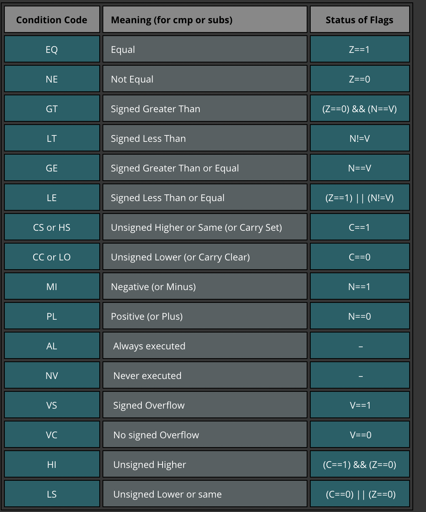

<!DOCTYPE HTML>
<html lang="en" class="sidebar-visible no-js light">
    <head>
        <!-- Book generated using mdBook -->
        <meta charset="UTF-8">
        <title>raspberrypi-os-tutorials-notes</title>
        
        <meta name="robots" content="noindex" />
        
        


        <!-- Custom HTML head -->
        


        <meta content="text/html; charset=utf-8" http-equiv="Content-Type">
        <meta name="description" content="">
        <meta name="viewport" content="width=device-width, initial-scale=1">
        <meta name="theme-color" content="#ffffff" />

        
        <link rel="icon" href="favicon.svg">
        
        
        <link rel="shortcut icon" href="favicon.png">
        
        <link rel="stylesheet" href="css/variables.css">
        <link rel="stylesheet" href="css/general.css">
        <link rel="stylesheet" href="css/chrome.css">
        
        <link rel="stylesheet" href="css/print.css" media="print">
        

        <!-- Fonts -->
        <link rel="stylesheet" href="FontAwesome/css/font-awesome.css">
        
        <link rel="stylesheet" href="fonts/fonts.css">
        

        <!-- Highlight.js Stylesheets -->
        <link rel="stylesheet" href="highlight.css">
        <link rel="stylesheet" href="tomorrow-night.css">
        <link rel="stylesheet" href="ayu-highlight.css">

        <!-- Custom theme stylesheets -->
        

        
    </head>
    <body>
        <!-- Provide site root to javascript -->
        <script type="text/javascript">
            var path_to_root = "";
            var default_theme = window.matchMedia("(prefers-color-scheme: dark)").matches ? "navy" : "light";
        </script>

        <!-- Work around some values being stored in localStorage wrapped in quotes -->
        <script type="text/javascript">
            try {
                var theme = localStorage.getItem('mdbook-theme');
                var sidebar = localStorage.getItem('mdbook-sidebar');

                if (theme.startsWith('"') && theme.endsWith('"')) {
                    localStorage.setItem('mdbook-theme', theme.slice(1, theme.length - 1));
                }

                if (sidebar.startsWith('"') && sidebar.endsWith('"')) {
                    localStorage.setItem('mdbook-sidebar', sidebar.slice(1, sidebar.length - 1));
                }
            } catch (e) { }
        </script>

        <!-- Set the theme before any content is loaded, prevents flash -->
        <script type="text/javascript">
            var theme;
            try { theme = localStorage.getItem('mdbook-theme'); } catch(e) { }
            if (theme === null || theme === undefined) { theme = default_theme; }
            var html = document.querySelector('html');
            html.classList.remove('no-js')
            html.classList.remove('light')
            html.classList.add(theme);
            html.classList.add('js');
        </script>

        <!-- Hide / unhide sidebar before it is displayed -->
        <script type="text/javascript">
            var html = document.querySelector('html');
            var sidebar = 'hidden';
            if (document.body.clientWidth >= 1080) {
                try { sidebar = localStorage.getItem('mdbook-sidebar'); } catch(e) { }
                sidebar = sidebar || 'visible';
            }
            html.classList.remove('sidebar-visible');
            html.classList.add("sidebar-" + sidebar);
        </script>

        <nav id="sidebar" class="sidebar" aria-label="Table of contents">
            <div class="sidebar-scrollbox">
                <ol class="chapter"><li class="chapter-item expanded "><a href="index.html"><strong aria-hidden="true">1.</strong> 介绍</a></li><li class="chapter-item expanded "><a href="arm_asm.html"><strong aria-hidden="true">2.</strong> ARM 汇编基础</a></li><li class="chapter-item expanded "><a href="chapter_0.html"><strong aria-hidden="true">3.</strong> 00: 准备工作</a></li><li class="chapter-item expanded "><a href="chapter_1.html"><strong aria-hidden="true">4.</strong> 01: 循环等待 </a></li><li class="chapter-item expanded "><a href="chapter_2.html"><strong aria-hidden="true">5.</strong> 02: 初始化执行环境（runtime） </a></li><li class="chapter-item expanded "><a href="chapter_3.html"><strong aria-hidden="true">6.</strong> 03: 硬核输出 Hello World</a></li><li class="chapter-item expanded "><a href="chapter_4.html"><strong aria-hidden="true">7.</strong> 04: 安全访问全局数据结构</a></li><li class="chapter-item expanded "><a href="chapter_5.html"><strong aria-hidden="true">8.</strong> 05: 驱动：GPIO 和 UART</a></li></ol>
            </div>
            <div id="sidebar-resize-handle" class="sidebar-resize-handle"></div>
        </nav>

        <div id="page-wrapper" class="page-wrapper">

            <div class="page">
                
                <div id="menu-bar-hover-placeholder"></div>
                <div id="menu-bar" class="menu-bar sticky bordered">
                    <div class="left-buttons">
                        <button id="sidebar-toggle" class="icon-button" type="button" title="Toggle Table of Contents" aria-label="Toggle Table of Contents" aria-controls="sidebar">
                            <i class="fa fa-bars"></i>
                        </button>
                        <button id="theme-toggle" class="icon-button" type="button" title="Change theme" aria-label="Change theme" aria-haspopup="true" aria-expanded="false" aria-controls="theme-list">
                            <i class="fa fa-paint-brush"></i>
                        </button>
                        <ul id="theme-list" class="theme-popup" aria-label="Themes" role="menu">
                            <li role="none"><button role="menuitem" class="theme" id="light">Light (default)</button></li>
                            <li role="none"><button role="menuitem" class="theme" id="rust">Rust</button></li>
                            <li role="none"><button role="menuitem" class="theme" id="coal">Coal</button></li>
                            <li role="none"><button role="menuitem" class="theme" id="navy">Navy</button></li>
                            <li role="none"><button role="menuitem" class="theme" id="ayu">Ayu</button></li>
                        </ul>
                        
                        <button id="search-toggle" class="icon-button" type="button" title="Search. (Shortkey: s)" aria-label="Toggle Searchbar" aria-expanded="false" aria-keyshortcuts="S" aria-controls="searchbar">
                            <i class="fa fa-search"></i>
                        </button>
                        
                    </div>

                    <h1 class="menu-title">raspberrypi-os-tutorials-notes</h1>

                    <div class="right-buttons">
                        
                        <a href="print.html" title="Print this book" aria-label="Print this book">
                            <i id="print-button" class="fa fa-print"></i>
                        </a>
                        
                        
                    </div>
                </div>

                
                <div id="search-wrapper" class="hidden">
                    <form id="searchbar-outer" class="searchbar-outer">
                        <input type="search" name="search" id="searchbar" name="searchbar" placeholder="Search this book ..." aria-controls="searchresults-outer" aria-describedby="searchresults-header">
                    </form>
                    <div id="searchresults-outer" class="searchresults-outer hidden">
                        <div id="searchresults-header" class="searchresults-header"></div>
                        <ul id="searchresults">
                        </ul>
                    </div>
                </div>
                

                <!-- Apply ARIA attributes after the sidebar and the sidebar toggle button are added to the DOM -->
                <script type="text/javascript">
                    document.getElementById('sidebar-toggle').setAttribute('aria-expanded', sidebar === 'visible');
                    document.getElementById('sidebar').setAttribute('aria-hidden', sidebar !== 'visible');
                    Array.from(document.querySelectorAll('#sidebar a')).forEach(function(link) {
                        link.setAttribute('tabIndex', sidebar === 'visible' ? 0 : -1);
                    });
                </script>

                <div id="content" class="content">
                    <main>
                        <h1><a class="header" href="#学习笔记--用-树莓派4-写嵌入式操作系统" id="学习笔记--用-树莓派4-写嵌入式操作系统">学习笔记 | 用 树莓派4 写嵌入式操作系统</a></h1>
<p><em>by 张汉东</em></p>
<hr />
<p>这是我对官方 <a href="https://github.com/rust-embedded/rust-raspberrypi-OS-tutorials">Operating System development tutorials in Rust on the Raspberry Pi</a> 的学习笔记。</p>
<p>学习笔记代码仓库：<a href="https://github.com/ZhangHanDong/raspberrypi-os-tutorials-notes">https://github.com/ZhangHanDong/raspberrypi-os-tutorials-notes</a>，欢迎反馈交流。</p>
<p>注意：如果需要动手实现，请使用官方教程源码仓库配合本学习笔记。</p>
<p>当前已更新：</p>
<ul>
<li><a href="./readme.html">介绍</a></li>
<li><a href="./arm_asm.html">ARM 汇编基础</a></li>
<li><a href="./chapter_0.html">00: 准备工作</a></li>
<li><a href="./chapter_1.html">01: 循环等待 </a></li>
<li><a href="./chapter_2.html">02: 初始化执行环境（runtime） </a></li>
<li><a href="./chapter_3.html">03: 硬核输出 Hello World</a></li>
<li><a href="./chapter_4.html">04: 安全访问全局数据结构</a></li>
<li><a href="./chapter_5.html">05: 驱动：GPIO 和 UART</a></li>
</ul>
<h1><a class="header" href="#arm-汇编基础" id="arm-汇编基础">ARM 汇编基础</a></h1>
<p>汇编语言源程序格式区别：</p>
<ul>
<li><code>.s</code>，操作: 汇编，不可以在这里面加入预处理的命令。</li>
<li><code>.S</code>，操作: 预处理 + 汇编，可以在这里面加入预处理的命令。</li>
<li><code>.o</code>，只编译不链接。</li>
</ul>
<pre><code>$ as program.s -o program.o
$ ld program.o -o program
</code></pre>
<h2><a class="header" href="#汇编语言本质" id="汇编语言本质">汇编语言本质</a></h2>
<p>使用助记符和缩写来编写能控制底层高低电平电路信号的二进制机器码（指令集）组合，就是汇编程序。这些助记符集合就叫汇编语言。使用汇编工具去将汇编语言转换成机器码的过程叫做汇编(assembling)。</p>
<p>指令集体系结构(Instruction Set Architecture, ISA)，简称体系结构或系统结构(architecture),它是软件和硬件之间接口的一个完整定义。 ISA定义了一台计算机可以执行的所有指令的集合，每条指令规定了计算机执行什么操作，所处理的操作数存放的地址空间以及操作数类型。指令集架构是一个能为电路硬件翻译应用程序的一层抽象层。</p>
<h2><a class="header" href="#数据类型" id="数据类型">数据类型</a></h2>
<p>操作：<strong>载入（load）</strong> 和 <strong>存储（store）</strong></p>
<p>数据类型：有符号或无符号的 字/ 半字/ 字节。</p>
<pre><code class="language-c">ldr = Load Word
ldrh = Load unsigned Half Word
ldrsh = Load signed Half Word
ldrb = Load unsigned Byte
ldrsb = Load signed Bytes
​
str = Store Word
strh = Store unsigned Half Word
strsh = Store signed Half Word
strb = Store unsigned Byte
strsb = Store signed Byte
</code></pre>
<h3><a class="header" href="#字节序列" id="字节序列">字节序列</a></h3>
<p>查看内存的字节两种方式：<strong>小端模式（Little-Endian）</strong> 和 <strong>大端模式（Big-Endian）</strong>。</p>
<h3><a class="header" href="#arm-寄存器" id="arm-寄存器">ARM 寄存器</a></h3>
<p>共有 30 个 32 位通用寄存器。前 16 个寄存器（r0-15）可在用户级模式下访问，其他寄存器在特权软件执行中可用。</p>
<p>前 16 个寄存器可以分为两组：通用寄存器和特殊用途寄存器。</p>
<ul>
<li>
<p><code>R0-R12</code>：可用于常见操作期间存储临时值、指针（内存位置）等等。例如<code>R0</code>，在算术运算期间可以称为累加器，或用于存储调用的函数时返回的结果。<code>R7</code>在进行系统调用时非常有用，因为它存储了系统号，<code>R11</code>可帮助我们跟踪作为帧指针的堆栈上的边界（稍后将介绍）。此外，ARM上的函数调用约定函数的前四个参数存储在寄存器<code>r0-r3</code>中。</p>
</li>
<li>
<p><code>R13</code>：<code>SP</code>（栈指针）。始终指向当前栈顶。</p>
</li>
<li>
<p><code>R14</code>：<code>LR</code>（链接寄存器）。进行函数调用时，链接寄存器将更新为当前函数调用指令的下一个指令的地址，也就是函数调用返回后需要继续执行的指令。这么做是允许子函数调用完成后，在子函数中利用该寄存器保存的指令地址再返回到父函数中。</p>
</li>
<li>
<p><code>R15</code>：<code>PC</code>（程序计数器）。程序计数器自动按执行的指令大小递增。此指令大小在 ARM 模式下始终为4个字节，在 THUMB 模式下为 2 个字节。执行分支指令时，PC 保存目标地址。在执行过程中，在 ARM 模式下 PC 将当前指令的地址加上 8（两个ARM指令），在 Thumb（v1）状态下则指令加上4（两个Thumb指令）。这与x86 中 PC 始终指向要执行的下一个指令不同。</p>
</li>
</ul>
<h2><a class="header" href="#arm-模式-和-thumb-模式" id="arm-模式-和-thumb-模式">ARM 模式 和 Thumb 模式</a></h2>
<p>ARM 处理器主要有两种工作模式: ARM 状态 和 Thumb 状态。它们主要区别是指令集，在 ARM 模式下指令集始终是<code>32-bit</code>，但是在 Thumb 模式下可以是<code>16-bit</code>或者<code>32-bit</code>。学会怎么使用Thumb模式对于ARM开发很重要。</p>
<p><strong>ARM模式和Thumb模式的态区别：</strong></p>
<ul>
<li>条件执行：在 ARM 模式下所有的指令都支持条件执行。一些版本的ARM处理器可以通过it指令在Thumb工作模式下支持条件执行。</li>
<li>ARM 和 Thumb 模式下的32-bit指令：在 Thumb 模式下的<code>32-bit</code>指令有<code>.w</code>后缀。</li>
<li>桶型位移器（barrel shifter）是ARM模式下的另一个特点。它可以将多条指令缩减为一条。例如，你可以通过向左位移1位的指令后缀将乘法运算直接包含在一条MOV指令中（将一个寄存器的值乘以2，再将结果MOV到另一个寄存器）: <code>MOV R1, R0, LSL#1 ;R1 = R0 * 2</code>，而不需要使用专门的乘法指令来运算。</li>
</ul>
<h3><a class="header" href="#armv8-寄存器" id="armv8-寄存器">ARMv8 寄存器</a></h3>
<ul>
<li>
<p>参数寄存器（X0-X7）： 用作临时寄存器或可以保存的调用者保存的寄存器变量函数内的中间值，调用其他函数之间的值（8 个寄存器可用于传递参数）</p>
</li>
<li>
<p>来电保存的临时寄存器（X9-X15）： 如果调用者要求在任何这些寄存器中保留值调用另一个函数，调用者必须将受影响的寄存器保存在自己的堆栈中帧。 它们可以通过被调用的子程序进行修改，而无需保存并在返回调用者之前恢复它们。</p>
</li>
<li>
<p>被调用者保存的寄存器（X19-X29）： 这些寄存器保存在被调用者帧中。 它们可以被被调用者修改子程序，只要它们在返回之前保存并恢复。</p>
</li>
<li>
<p>特殊用途寄存器（X8，X16-X18，X29，X30）：</p>
<ul>
<li>X8： 是间接结果寄存器，用于保存子程序返回地址，尽量不使用</li>
<li>X16 和 X17： 程序内调用临时寄存器</li>
<li>X18： 平台寄存器，保留用于平台 ABI，尽量不使用</li>
<li>X29： 帧指针寄存器（FP）</li>
<li>X30： 链接寄存器（LR）</li>
<li>X31： 堆栈指针寄存器 SP 或零寄存器 ZXR</li>
</ul>
</li>
</ul>
<h3><a class="header" href="#异常向量表" id="异常向量表">异常向量表</a></h3>
<p>在ARM体系结构中，存在7种异常处理。当异常发生时，处理器会把PC设置为一个特定的存储器地址。这一地址放在被称为向量表（vector table）的特定地址范围内，向量表的入口是一些跳转指令，跳转到专门处理某个异常或中断的子程序。</p>
<p>异常向量表地址说明：</p>
<ul>
<li><code>0x00</code>: 复位，进入 管理模式</li>
<li><code>0x04</code>: 未定义指令， 进入 未定义模式</li>
<li><code>0x08</code>: 软件中断，进入 管理模式</li>
<li><code>0x0c</code>: 中止（预取），进入 中止模式</li>
<li><code>0x10</code>: 中止（数据），进入 中止模式</li>
<li><code>0x14</code>: 保留</li>
<li><code>0x18</code>: 中断 IRQ ，进入 中断模式</li>
<li><code>0x1c</code>: 快中断 FIQ，进入 快中断模式</li>
</ul>
<h2><a class="header" href="#arm指令简介" id="arm指令简介">ARM指令简介</a></h2>
<p>ARM指令后面通常跟着两个操作数，像下面这样的形式：</p>
<pre><code class="language-text">MNEMONIC{S}{condition} {Rd}, Operand1, Operand2
</code></pre>
<p>解释：</p>
<pre><code class="language-text">MNEMONIC     - 操作指令（机器码对应的助记符）。
{S}          - 可选后缀. 如果指定了该后缀，那么条件标志将根据操作结果进行更新。
{condition}  - 执行指令所需满足的条件。
{Rd}         - 目标寄存器，存储操作结果。
Operand1     - 第一操作数（寄存器或者立即数）
Operand2     - 第二操作数. 立即数或者带有位移操作后缀（可选）的寄存器。
</code></pre>
<p><code>condition</code>字段与<code>CPSR</code>寄存器的值有关，准确的说是和<code>CPSR</code>某些位有关。<code>Operand2</code>也叫可变操作数，因为它可以有多种形式--立即数、寄存器、带有位移操作的寄存器。</p>
<p>例如<code>Operand2</code>可以有以下多种形式：</p>
<pre><code class="language-text">#123                    - 立即数。
Rx                      - 寄存器x (如 R1, R2, R3 ...)。
Rx, ASR n               - 寄存器x，算术右移n位 (1 = n = 32)。
Rx, LSL n               - 寄存器x，逻辑左移n位 (0 = n = 31)。
Rx, LSR n               - 寄存器x，逻辑右移n位 (1 = n = 32)。
Rx, ROR n               - 寄存器x，循环右移n位 (1 = n = 31)。
Rx, RRX                 - 寄存器x，扩展的循环位移，右移1位。
</code></pre>
<p>示例：</p>
<pre><code class="language-text">ADD   R0, R1, R2         - 将寄存器R1内的值与寄存器R2内的值相加，结果存储到R0。
ADD   R0, R1, #2         - 将寄存器R1内的值加上立即数2，结果存储到R0。
MOVLE R0, #5             - 仅当满足条件LE（小于或等于）时，才将立即数5移动到R0（编译器会把它看作MOVLE R0, R0, #5）。
MOV   R0, R1, LSL #1     - 将寄存器R1的内容向左移动一位然后移动到R0（Rd）。因此，如果R1值是2，它将向左移动一位，并变为4。然后将4移动到R0。
</code></pre>
<p>其他指令：</p>
<p></p>
<h3><a class="header" href="#内存指令加载load和-存储stroe" id="内存指令加载load和-存储stroe">内存指令：加载（Load）和 存储（Stroe）</a></h3>
<p>在ARM上数据必须从内存中加载到寄存器之后才能进行其他操作，而在x86上大部分指令都可以直接访问内存中的数据。</p>
<p>你只能使用LDR和STR指令访问内存。</p>
<p>三个基本偏移形式：</p>
<ol>
<li>
<p>偏移形式：立即数作为偏移量</p>
<ul>
<li>寻址模式：立即寻址</li>
<li>寻址模式：前变址寻址</li>
<li>寻址模式：后变址寻址</li>
</ul>
</li>
<li>
<p>偏移形式：寄存器作为偏移量</p>
<ul>
<li>寻址模式：立即寻址</li>
<li>寻址模式：前变址寻址</li>
<li>寻址模式：后变址寻址</li>
</ul>
</li>
<li>
<p>偏移形式：缩放寄存器作为偏移量</p>
<ul>
<li>寻址模式：立即寻址</li>
<li>寻址模式：前变址寻址</li>
<li>寻址模式：后变址寻址</li>
</ul>
</li>
</ol>
<p>示例 1：</p>
<p><code>LDR</code> 用于将内存中的值加载到寄存器中，<code>STR</code> 用于将寄存器内的值存储到内存地址。</p>
<pre><code>LDR R2, [R0]   @ [R0] - R0中保存的值是源地址。
STR R2, [R1]   @ [R1] - R1中保存的值是目标地址。
</code></pre>
<ul>
<li>LDR : 把R0内保存的值作为地址值，将该地址处的值加载到寄存器R2中。</li>
<li>STR : 把R1内保存的值作为地址值，将寄存器R2中的值存储到该地址处。</li>
</ul>
<p>有时你想要更有效率，一次加载（或存储）多个值。为此我们可以使用<code>LDM（load multiple）</code>和<code>STM（stroe multiple）</code>指令。</p>
<h3><a class="header" href="#入栈和出栈" id="入栈和出栈">入栈和出栈</a></h3>
<p>进程中有一个叫做栈的内存位置。栈指针（<code>SP</code>）寄存器总是指向栈内存中的地址。程序应用中通常使用栈来存储临时数据。前面讲的ARM中只能使用加载和存储来访问内存，就是只能使用<code>LDR</code>/<code>STR</code>指令或者他们的衍生指令（<code>LDM</code>、<code>STM</code>、<code>LDMIA</code>、<code>LDMDA</code>、<code>STMDA</code>等等）进行内存操作。在x86中使用<code>PUSH</code>和<code>POP</code>从栈内取或存，ARM中我们也可以使用这条指令。</p>
<h3><a class="header" href="#条件状态和分支" id="条件状态和分支">条件状态和分支</a></h3>
<p>下面的表格列出了可用的条件状态码，描述和标志位：</p>
<p></p>
<p>下面是条件代码和相反代码：</p>
<p></p>
<p><strong>分支：</strong></p>
<p>有三种类型的分支指令：</p>
<ul>
<li>普通分支（B），简单的跳转到一个函数。</li>
<li>带链接的跳转（BL），将PC+4的值保存到LR寄存器，然后跳转。</li>
<li>带状态切换的跳转（BX）和带状态切换及链接的跳转（BLX），与B和BL一致，只是添加了工作状态的切换（ARM模式-Thumb模式）。需要寄存器作为第一个操作数。</li>
</ul>
<h3><a class="header" href="#栈和函数" id="栈和函数">栈和函数</a></h3>
<p>一般而言，栈就是进程中的一段内存。这段内存是在进程创建时分配的。我们使用栈来保存一些临时数据，如函数中的局部变量，函数之间转换的环境变量等。使用PUSH和POP指令与栈进行交互。</p>
<p>为了让一切变得井然有序，函数使用栈帧（专门用于函数中使用的局部内存区域）。栈帧是在函数开始调用时创建的。栈帧指针（FP）被置为栈帧的底部，然后分配栈帧的缓冲区。栈帧中通常（从底部）保存了返回地址（前面的LR寄存器值）、栈帧指针、其他一些需要保存的寄存器、函数参数（如果超过4个参数）、局部变量等等。虽然栈帧的实际内容可能有所不同，但基本就这些。最后栈帧在函数结束时被销毁。</p>
<p><strong>函数</strong></p>
<p>函数体的结构：开始、执行体和收尾。</p>
<p>开始时需要保存程序前面的状态（LR和R11分别入栈）然后为函数的局部变量设置堆栈。虽然开始部分的实现可能因编译器而异，但通常是用PUSH/ADD/SUB指令来完成的。大体看起来是下面这样：</p>
<pre><code class="language-text">push   {r11, lr}    /* 将lr和r11入栈 */
add    r11, sp, #0  /* 设置栈帧的底部位置 */
sub    sp, sp, #16  /* 栈指针减去16为局部变量分配缓存区 */
</code></pre>
<p>函数体部分就是你程序的实际逻辑区，包含了你代码逻辑的各种指令：</p>
<pre><code class="language-text">mov    r0, #1       /* 设置局部变量(a=1). 同时也为函数max的第一个参数 */
mov    r1, #2       /* 设置局部变量(b=2). 同时也为函数max的第二个参数 */
bl     max          /* 调用函数max */
</code></pre>
<p>函数的最后部分用于将程序的状态还原到它初始的状态（函数调用前），这样就可以从函数被调用的地方继续执行。所以我们需要重新调整栈指针（SP）。</p>
<p>重新调整栈指针后，将之前（函数开始处）保存的寄存器值从堆栈弹出到相应的寄存器来还原这些寄存器值。根据函数类型，一般POP指令是函数最后结束的指令。但是，在还原寄存器值后，我们需要使用 BX 指令来离开函数。示例如下：</p>
<pre><code class="language-text">sub    sp, r11, #0  /* 重新调整栈指针 */
pop    {r11, pc}    /* 恢复栈帧指针, 通过加载之前保存的LR到PC，程序跳转到之前LR保存位置。函数的栈帧被销毁 */
</code></pre>
<p>所以我们现在知道：</p>
<ol>
<li>函数在开始时设置相应的环境。</li>
<li>函数体中执行相关逻辑，然后通过R0保存返回值。</li>
<li>函数收尾时恢复所有的状态，以便程序可以在函数调用前的位置继续执行。</li>
</ol>
<p><strong>叶子函数和非叶子函数</strong></p>
<ul>
<li>叶子函数，在函数内不会调用/跳转到另一个函数。</li>
<li>非叶子函数，则会在自己的函数逻辑中调用另一个函数。</li>
</ul>
<h3><a class="header" href="#宏" id="宏">宏</a></h3>
<p>指令：<code>.MACRO/.ENDM</code></p>
<pre><code class="language-text">    语法:

        宏名称 .MACRO [形式参数]

        ........

        宏定义语句

        ........

        .ENDM

 

    描述：

        用.MACRO指令你可以定义一个宏，可以把需要重复执行的一段代码，或者是一组指令缩写成一个宏，在

        程序调用的时候就可以直接去调用这个宏而使代码更加简洁清晰，此宏由以下3部分构成：

        1. 头： 在这里可以指定这个宏的名称，别且定义形式参数

        2. 体： 这里包含的是当这个宏被调用时所需要执行的指令或者语句。

        3. 尾:  这里用.ENDM标识着这个宏的结束。
</code></pre>
<p>指令：<code>.equ</code> ，类似于 C 中的<code>#define</code> 宏。</p>
<h2><a class="header" href="#代码示例" id="代码示例">代码示例</a></h2>
<pre><pre class="playground"><code class="language-rust">
<span class="boring">#![allow(unused)]
</span><span class="boring">fn main() {
</span>.section  .data         ; 这里.section常常省略
    &lt;初始化数据&gt;
.section  .bss          ; 这里.section常常省略
    &lt;未初始化数据&gt;
.section  .text         ; 这里.section常常省略
.global     __start     ; 如果其他文件调用__start，则需要.global声明
__start:                ; 标签，相当于函数入口
    &lt;汇编代码&gt;
<span class="boring">}
</span></code></pre></pre>
<p>寻址方式：</p>
<ul>
<li>立即数寻址。<code>ADD R0， R0， #0x3F</code></li>
<li>寄存器寻址。<code>ADD R0,  R1,  R2</code></li>
<li>寄存器间接寻址。<code>LDR R0, [R2]    ；相当于指针</code></li>
<li>基址变址寻址。<code>LDR R0, [R1, #4]</code></li>
<li>相对寻址。<code>BL  NECT    ；  NEXT为标签</code></li>
</ul>
<p>定义类伪指令：</p>
<ul>
<li><code>.global</code> 表明一个标号为全局</li>
<li><code>.ascii</code> 定义字符串数据</li>
<li><code>.byte</code> 定义字节数据</li>
<li><code>.word</code> 定义字数据</li>
<li><code>.data</code> 表明数据段</li>
<li><code>.size </code> 设定指定符号的大小</li>
<li><code>.type</code>  指定符号的类型</li>
</ul>
<pre><code>.data
varA:
.ascii  &quot;helloworld&quot;
varB:
.word   0xff
varC:
.byte   0x1
.text
    ...
</code></pre>
<p><code>.equ</code> 定义一个宏:</p>
<pre><code>.equ    DA, 0x89
mov r0, #DA
</code></pre>
<p><code>nop</code> 空操作</p>
<pre><code>mov r0, r0
</code></pre>
<p><code>wfi</code> 和 <code>wfe</code>:</p>
<p><code>wfi (Wait for interrupt)</code>和<code>wfe (Wait for event)</code>是两个让ARM核进入<code>low-power standby</code>模式的指令，由ARM architecture定义，由ARM core实现。<code>spinlock</code>实现一般和 <code>wfe</code>指令有关。</p>
<p>standby 一般为待机模式。</p>
<p>对WFI来说，执行WFI指令后，ARM core会立即进入low-power standby state，直到有WFI Wakeup events发生。</p>
<p>而WFE则稍微不同，执行WFE指令后，根据Event Register（一个单bit的寄存器，每个PE一个）的状态，有两种情况：如果Event Register为1，该指令会把它清零，然后执行完成（不会standby）；如果Event Register为0，和WFI类似，进入low-power standby state，直到有WFE Wakeup events发生。</p>
<p>跳转：</p>
<ul>
<li><code>b  1b</code> 中的b是backward的意思，跳到程序的前面（往上）</li>
<li><code>b  1f</code>  中的f是forward的意思，跳到程序的后面（往下）</li>
<li><code>1</code>表示标号（局部标号）。</li>
</ul>
<h3><a class="header" href="#参考" id="参考">参考</a></h3>
<ol>
<li><a href="https://www.zhihu.com/column/c_1215698269139152896">https://www.zhihu.com/column/c_1215698269139152896</a></li>
<li><a href="https://azeria-labs.com/writing-arm-assembly-part-1/">https://azeria-labs.com/writing-arm-assembly-part-1/</a></li>
<li><a href="http://blog.leanote.com/post/tarena/ARM%E6%B1%87%E7%BC%96%E5%85%A5%E9%97%A8">http://blog.leanote.com/post/tarena/ARM%E6%B1%87%E7%BC%96%E5%85%A5%E9%97%A8</a></li>
<li><a href="https://www.huaweicloud.com/articles/ca0de32c6bb0903b23de5dbcdfab3c5b.html">https://www.huaweicloud.com/articles/ca0de32c6bb0903b23de5dbcdfab3c5b.html</a></li>
</ol>
<h1><a class="header" href="#00-准备工作" id="00-准备工作">00: 准备工作</a></h1>
<p>因为国内的环境，需要对原来的 Dockerfile 和 命令做一些更改。</p>
<h2><a class="header" href="#更改-dockerfile-这一步已提-pr-到原始仓库且被合并" id="更改-dockerfile-这一步已提-pr-到原始仓库且被合并">更改 Dockerfile (这一步已提 PR 到原始仓库且被合并)</a></h2>
<p>打开 <code>docker/rustembedded-osdev-utils/Dockerfile</code>，找到<code># QEMU</code>，更改 <code>git</code> 地址为下面这行：</p>
<pre><code># QEMU
git clone https://git.qemu.org/git/qemu.git;    
</code></pre>
<h2><a class="header" href="#更改-makefile-中-docker-命令" id="更改-makefile-中-docker-命令">更改 Makefile 中 Docker 命令</a></h2>
<p><code>docker build</code> 命令下要添加这一行：</p>
<pre><code>  --add-host raw.githubusercontent.com:185.199.111.133 \
</code></pre>
<p>这是为了避免无法解析 <code>raw.githubusercontent.com</code> 域名而为，IP地址如果不行，则请自行<code>ping</code>获取最新的。</p>
<h2><a class="header" href="#构建本地-docker-镜像" id="构建本地-docker-镜像">构建本地 Docker 镜像</a></h2>
<p>进入 <code>docker</code> 目录，执行命令：</p>
<pre><code>&gt; make
</code></pre>
<p>即可。</p>
<h2><a class="header" href="#教程说明" id="教程说明">教程说明</a></h2>
<p>包含一个独立可引导的二进制内核文件。前五章只能使用 Qemu 来运行，因为都是基础内容。到了第六章可以在树莓派上加载和运行内核并通过UART来观察输出结果。</p>
<h3><a class="header" href="#代码组织和结构" id="代码组织和结构">代码组织和结构</a></h3>
<ul>
<li>
<p><code>src/_arch</code>。针对特定目标架构的内核子系统，放到该目录下。<code>_arch</code>中的<code>_</code>表示此文件夹不属于标准模块层次结构。而是使用<code>＃[path =&quot;_arch/xxx/yyy.rs&quot;]</code>属性将其内容有条件地引入各自的文件中。</p>
</li>
<li>
<p><code>bsp/</code>。 bsp 模块中定义 <code>BSP</code>， 表示 Board Support Package。而且包含目标主板特殊的定义和功能。这些是诸如主板的内存映射或相应主板上的设备驱动程序实例之类的东西。</p>
</li>
</ul>
<h3><a class="header" href="#内核接口" id="内核接口">内核接口</a></h3>
<p><code>arch</code>和<code>bsp</code>都包含根据实际目标和主板不同而编译的代码。例如，<code>interrupt controller</code>对于硬件<code>Raspberry Pi 3</code>和<code>Raspberry Pi 4</code>是不同的，但是我们想让<code>kernel</code>剩下的代码可以轻松地适配它们。</p>
<p>通过 trait 接口来对其进行抽象是个很好的做法。</p>
<pre><code class="language-text">        +-------------------+
        | Interface (Trait) |
        |                   |
        +--+-------------+--+
           ^             ^
           |             |
           |             |
+----------+--+       +--+----------+
| kernel code |       |  bsp code   |
|             |       |  arch code  |
+-------------+       +-------------+
</code></pre>
<h2><a class="header" href="#嵌入式操作系统特点" id="嵌入式操作系统特点">嵌入式操作系统特点</a></h2>
<p>嵌入式操作系统EOS（Embedded Operating System）是一种用途广泛的系统软件，过去它主要应用于工业控制和国防系统领域。EOS负责嵌入系统的全部软、硬件资源的分配、调度作，控制、协调并发活动；它必须体现其所在系统的特征，能够通过装卸某些模块来达到系统所要求的功能。</p>
<p>EOS是相对于一般操作系统而方的，它除具备了一般操作系统最基本的功能，如任务调度、同步机制、中断处理、文件处理等外，还有以下特点：</p>
<ul>
<li>可装卸性。开放性、可伸缩性的体系结构。</li>
<li>强实时性。EOS实时性一般较强，可用于各种设备控制当中。</li>
<li>统一的接口。提供各种设备驱动接口。</li>
<li>操作方便、简单、提供友好的图形GUI，图形界面，追求易学易用。</li>
<li>提供强大的网络功能，支持TCP/IP协议及其它协议，提供TCP/UDP/IP/PPP协议支持及统一的MAC访问层接口，为各种移动计算设备预留接口。</li>
<li>强稳定性，弱交互性。嵌入式系统一旦开始运行就不需要用户过多的干预，这就要负责系统管理的EOS具有较强的稳定性。嵌入式操作系统的用户接口一般不提供操作命令，它通过系统的调用命令向用户程序提供服务。</li>
<li>固化代码。在嵌入式系统中，嵌入式操作系统和应用软件被固化在嵌入式系统计算机的ROM中。辅助存储器在嵌入式系统中很少使用，因此，嵌入式操作系统的文件管理功能应该能够很容易地拆卸，而用各种内存文件系统。</li>
<li>更好的硬件适应性，也就是良好的移植性。</li>
</ul>
<blockquote>
<p>以上参考：<a href="https://www.jianshu.com/p/845a01816f2a">https://www.jianshu.com/p/845a01816f2a</a></p>
</blockquote>
<h2><a class="header" href="#树莓派简介" id="树莓派简介">树莓派简介</a></h2>
<p>因为手头有一个树莓派4b，吃灰一年了，现在就用它先来跟随这个教程实现一个嵌入式 OS 吧。</p>
<p>树莓派4b的核心处理器（SoC）为博通 BCM2711（四核1.5GHz，Cortex A72架构，树莓派3是四核A53），LPDDR4内存，由5V/3A USB-C供电或GPIO 5V。</p>
<p>树莓派上面可以安装的操作系统有很多：Raspbian/ Pidora/ Arch/ Kali Linux/ OSMC/ Ubuntu MATE/ Ubuntu Core/ Ubuntu Server/ LibreELEC/ Mozilla WebThings/ CentOS/ ChromiumOS 等等（参考：<a href="https://zhuanlan.zhihu.com/p/105299943">https://zhuanlan.zhihu.com/p/105299943</a>）。</p>
<p></p>
<h3><a class="header" href="#arm-架构" id="arm-架构">ARM 架构</a></h3>
<ul>
<li>ARM 架构使用 精简指令集（RISC），而 x86 使用复杂指令集（CISC)。</li>
<li>ARM 处理器是低功耗处理器。</li>
<li>ARM 对应 ARMv8 64位架构，有两种执行模式 <code>AArch32</code> 和 <code>AArch64</code>。Intel 的 64位指令集 x86-64（有时简称为x64）实际是 AMD 设计开发的。</li>
</ul>
<h3><a class="header" href="#cortex-a72" id="cortex-a72">Cortex-A72</a></h3>
<p>树莓派4b采用的 Cortex-A72 是目前基于 ARMv8-A 架构处理器中使用最广泛的处理器之一，主要其应用市场包括高端智能手机、大屏幕的移动设备、企业网路设备、服务器、无线基台、数字电视。</p>
<h3><a class="header" href="#armv8-aarch64-寄存器和指令集" id="armv8-aarch64-寄存器和指令集">ARMv8-aarch64 寄存器和指令集</a></h3>
<p><strong>异常等级</strong></p>
<p>软件运行异常级别：</p>
<ul>
<li>EL0： 普通用户应用程序</li>
<li>EL1： 操作系统内核通常被描述为特权</li>
<li>EL2： 管理程序</li>
<li>EL3： 低级固件，包括安全监视器</li>
</ul>
<p><strong>ARMv8 寄存器</strong></p>
<p>AArch 拥有 31 个通用寄存器，系统运行在 64 位状态下的时候名字叫 Xn，运行在 32 位的时候就叫 Wn.</p>
<p><strong>ARM 64 位架构的 ABI</strong></p>
<p>ARM 体系结构的应用程序二进制接口（ABI， Application Binary Interface）指定了基本规则所有可执行的本机代码模块必须遵守，以便它们可以正常工作。</p>
<h2><a class="header" href="#arm-汇编语言基础" id="arm-汇编语言基础">ARM 汇编语言基础</a></h2>
<p><a href="./arm_asm.html">详细</a></p>
<p>参考：</p>
<ol>
<li><a href="https://cloud-atlas.readthedocs.io/zh_CN/latest/arm/hardware/index.html">https://cloud-atlas.readthedocs.io/zh_CN/latest/arm/hardware/index.html</a></li>
<li><a href="https://zhuanlan.zhihu.com/p/21266987">https://zhuanlan.zhihu.com/p/21266987</a></li>
<li><a href="https://zhuanlan.zhihu.com/p/95028674">https://zhuanlan.zhihu.com/p/95028674</a></li>
<li><a href="https://winddoing.github.io/post/7190.html">https://winddoing.github.io/post/7190.html</a></li>
<li><a href="https://zhuanlan.zhihu.com/p/82490125">https://zhuanlan.zhihu.com/p/82490125</a></li>
</ol>
<h1><a class="header" href="#chapter-1-wait-forever" id="chapter-1-wait-forever">Chapter 1 ：Wait Forever</a></h1>
<p>这一章的内容很简单，就是构建了一个死循环。还没有任何内核代码。</p>
<h2><a class="header" href="#代码解释" id="代码解释">代码解释</a></h2>
<p>一、先看 <code>main.rs</code> ：</p>
<pre><pre class="playground"><code class="language-rust">
<span class="boring">#![allow(unused)]
</span>#![feature(asm)]
#![feature(global_asm)]
#![no_main]
#![no_std]

<span class="boring">fn main() {
</span>mod bsp;
mod cpu;
mod panic_wait;

// Kernel code coming next tutorial.
<span class="boring">}
</span></code></pre></pre>
<p>这段代码中，用到了两个 Feature Gate : <code>#![feature(asm)]</code> 和 <code>#![feature(global_asm)]</code>，只有Nightly Rust 下才可以用它们，这表示我们要使用内联汇编功能。</p>
<p>注意另外也用了 <code>#![no_main]</code> 和 <code>#![no_std]</code>，因为现在是面向 bare metal 编程，无法使用标准库。</p>
<p>二、 再看 <code>cpu</code> 模块：</p>
<pre><pre class="playground"><code class="language-rust">
<span class="boring">#![allow(unused)]
</span><span class="boring">fn main() {
</span>// cpu/boot.rs 
#[cfg(target_arch = &quot;aarch64&quot;)]
#[path = &quot;../_arch/aarch64/cpu/boot.rs&quot;]
mod arch_boot;
<span class="boring">}
</span></code></pre></pre>
<p>这个通过 <code>#[path = &quot;../_arch/aarch64/cpu/boot.rs&quot;]</code>来指定具体的模块路径，实际上是 <code>_arch/aarch64/cpu/boot.rs</code>。</p>
<pre><pre class="playground"><code class="language-rust">
<span class="boring">#![allow(unused)]
</span><span class="boring">fn main() {
</span>// _arch/aarch64/cpu/boot.rs

global_asm!(include_str!(&quot;boot.s&quot;));
<span class="boring">}
</span></code></pre></pre>
<p>而这个 <code>boot.rs</code> 中则使用 <code>global_asm!</code> 来加载外部汇编源码文件<code>boot.s</code>。</p>
<p>三、 汇编代码释疑</p>
<pre><pre class="playground"><code class="language-rust">
<span class="boring">#![allow(unused)]
</span>
<span class="boring">fn main() {
</span>//--------------------------------------------------------------------------------------------------
// Public Code
//--------------------------------------------------------------------------------------------------
.section .text._start

//------------------------------------------------------------------------------
// fn _start()
//------------------------------------------------------------------------------
_start:
	// Infinitely wait for events (aka &quot;park the core&quot;).
1:	wfe         // 设置 标签 1，使用指令 wfe ，等待某个事件，让 ARM 核进入待机模式
	b	1b      // 跳转回 标签 1

.size	_start, . - _start 
.type	_start, function
.global	_start  
<span class="boring">}
</span></code></pre></pre>
<p>这段汇编代码是 ARM 汇编，结合相关汇编知识，我们可以看出，这段代码是将整个程序设置为待机模式。</p>
<p>此处穿插一些相关的 ARM 汇编基础：</p>
<blockquote>
<p><code>wfi</code> 和 <code>wfe</code>:</p>
<p><code>wfi (Wait for interrupt)</code>和<code>wfe (Wait for event)</code>是两个让ARM核进入<code>low-power standby</code>模式的指令，由ARM architecture定义，由ARM core实现。<code>spinlock</code>实现一般和 <code>wfe</code>指令有关。</p>
<p>standby 一般为待机模式。</p>
<p>对WFI来说，执行WFI指令后，ARM core会立即进入low-power standby state，直到有WFI Wakeup events发生。</p>
<p>而WFE则稍微不同，执行WFE指令后，根据Event Register（一个单bit的寄存器，每个PE一个）的状态，有两种情况：如果Event Register为1，该指令会把它清零，然后执行完成（不会standby）；如果Event Register为0，和WFI类似，进入low-power standby state，直到有WFE Wakeup events发生。</p>
</blockquote>
<p>四、 BSP</p>
<p>因为现在只能用 qemu，所以 BSP 就暂时无效。</p>
<p>五、 Panic Handler </p>
<p>在标准库中，Panic 已经被定义。但是在不使用标准库的 <code>no-std</code> 环境，Panic 属于未定义，所以我们需要定义它的行为。</p>
<pre><pre class="playground"><code class="language-rust">
<span class="boring">#![allow(unused)]
</span><span class="boring">fn main() {
</span>// panic_wait.rs

use core::panic::PanicInfo;

#[panic_handler]
fn panic(_info: &amp;PanicInfo) -&gt; ! {
    unimplemented!()
}
<span class="boring">}
</span></code></pre></pre>
<p><code>＃[panic_handler]</code>用于定义恐慌的行为！在<code>＃！[no_std]</code>应用程序中。 <code>＃[panic_handler]</code>属性必须应用于签名为<code>fn（＆PanicInfo）-&gt; !</code> 的函数。 并且该函数必须在 <code>binary / dylib / cdylib</code> crate 的依赖关系图中出现一次。 </p>
<p>鉴于嵌入式系统的范围从用户面临的问题到对安全至关重要的问题（不会崩溃），没有一种大小适合所有恐慌行为，但是有很多常用行为。 这些常见行为已打包到定义<code>＃[panic_handler]</code>函数的 crate 中。 一些示例包括：</p>
<ul>
<li><a href="https://crates.io/crates/panic-abort">panic-abort</a> 。Panic 会导致执行中止（abort）指令。</li>
<li><a href="https://crates.io/crates/panic-halt">panic-halt</a> 。Panic 会导致程序或当前线程通过进入无限循环而暂停。</li>
<li><a href="https://crates.io/crates/panic-itm">panic-itm</a> 。Panic 消息是使用ITM（ARM Cortex-M特定的外围设备）记录的。</li>
<li><a href="https://crates.io/crates/panic-semihosting">panic-semihosting</a> 。Panic 消息将使用半主机（semihosting）技术记录到主机。</li>
</ul>
<blockquote>
<p>参考： <a href="https://docs.rust-embedded.org/book/start/panicking.html">https://docs.rust-embedded.org/book/start/panicking.html</a></p>
</blockquote>
<p>六、 <code>build.rs</code></p>
<pre><pre class="playground"><code class="language-rust">// build.rs
use std::env;

fn main() {
    let linker_file = env::var(&quot;LINKER_FILE&quot;).unwrap();

    println!(&quot;cargo:rerun-if-changed={}&quot;, linker_file);
    println!(&quot;cargo:rerun-if-changed=build.rs&quot;);
}
</code></pre></pre>
<p>使用 <code>build.rs</code> 来传递 <code>LINKER_FILE</code>，目前用不到。等第六章可以使用树莓派实体的时候就可以用了。</p>
<h2><a class="header" href="#观察代码运行结果" id="观察代码运行结果">观察代码运行结果</a></h2>
<p>在 <code>01_wait_forever</code> 目录下执行命令：</p>
<pre><code>&gt; make qemu
</code></pre>
<p>注意：不要更改 Makefile 中默认的 <code>rpi3</code> 为 <code>rpi4</code>，不支持。</p>
<p>输出结果：</p>
<pre><pre class="playground"><code class="language-rust">
<span class="boring">#![allow(unused)]
</span><span class="boring">fn main() {
</span>Launching QEMU
----------------
IN: 
0x00000000:  580000c0  ldr      x0, #0x18  
0x00000004:  aa1f03e1  mov      x1, xzr // 写入 xzr 寄存器的数据被忽略，读出的数据全为0，此处为初始化寄存器 x1,x2,x3
0x00000008:  aa1f03e2  mov      x2, xzr
0x0000000c:  aa1f03e3  mov      x3, xzr
0x00000010:  58000084  ldr      x4, #0x20
0x00000014:  d61f0080  br       x4

----------------
IN: 
0x00080000:  d503205f  wfe              // wef 进入 待机模式
0x00080004:  17ffffff  b        #0x80000  // 跳转到 地址 0x00080000

----------------
IN: 
0x00000300:  d2801b05  mov      x5, #0xd8  // 从 #0xd8 移动数据到 寄存器 x5，额外工作
// mrs 状态寄存器到通用寄存器的传送指令
0x00000304:  d53800a6  mrs      x6, mpidr_el1 // mpidr_el1 寄存器在多处理器系统中，为调度提供一个额外的PE（process element）识别机制
0x00000308:  924004c6  and      x6, x6, #3 // #3的值与06相位与后的值传送到X6
0x0000030c:  d503205f  wfe      
0x00000310:  f86678a4  ldr      x4, [x5, x6, lsl #3]
0x00000314:  b4ffffc4  cbz      x4, #0x30c // CBZ  ;比较（Compare），如果结果为零（Zero）就转移（只能跳到后面的指令），此处跳转到 地址 0x0000030c

----------------
IN: 
0x00000300:  d2801b05  mov      x5, #0xd8
0x00000304:  d53800a6  mrs      x6, mpidr_el1
0x00000308:  924004c6  and      x6, x6, #3
0x0000030c:  d503205f  wfe      
0x00000310:  f86678a4  ldr      x4, [x5, x6, lsl #3]
0x00000314:  b4ffffc4  cbz      x4, #0x30c // CBZ  ;比较（Compare），如果结果为零（Zero）就转移（只能跳到后面的指令），此处跳转到 地址 0x0000030c

----------------
IN: 
0x0000030c:  d503205f  wfe      
0x00000310:  f86678a4  ldr      x4, [x5, x6, lsl #3]
0x00000314:  b4ffffc4  cbz      x4, #0x30c

----------------
IN: 
0x00000300:  d2801b05  mov      x5, #0xd8
0x00000304:  d53800a6  mrs      x6, mpidr_el1
0x00000308:  924004c6  and      x6, x6, #3
0x0000030c:  d503205f  wfe      
0x00000310:  f86678a4  ldr      x4, [x5, x6, lsl #3]
0x00000314:  b4ffffc4  cbz      x4, #0x30c // CBZ  ;比较（Compare），如果结果为零（Zero）就转移（只能跳到后面的指令），此处跳转到 地址 0x0000030c

----------------
IN: 
0x0000030c:  d503205f  wfe      
0x00000310:  f86678a4  ldr      x4, [x5, x6, lsl #3]
0x00000314:  b4ffffc4  cbz      x4, #0x30c  // CBZ  ;比较（Compare），如果结果为零（Zero）就转移（只能跳到后面的指令），此处跳转到 地址 0x0000030c
<span class="boring">}
</span></code></pre></pre>
<p>CPU 可以通过物理地址来 逐字节 访问物理内存中保存的 数据，一般程序通常以 <code>0x8000</code>开头。</p>
<p>为什么总是以 <code>0x8000</code>这个地址开头呢？历史原因吧，一些系统在 <code>0x000</code> ~ <code>0x8000</code> 之间另作他用。比如Unix 把<code>0x000</code> 地址 作为空指针。</p>
<p>注： PE 代表Processing Element，它是ARM架构对处理单元的抽象，为方便理解，就把它当做ARM cores好了</p>
<h1><a class="header" href="#运行环境runtime初始化" id="运行环境runtime初始化">运行环境（Runtime）初始化</a></h1>
<p>为了后面进一步在裸机上运行 Rust 程序，以及编写真正的驱动程序，我们需要做一些准备工作：初始化运行环境（Runtime）。以往我们编程，很多工作都由操作系统来完成了，比如运行环境初始化。但别忘记我们现在面对的是裸机（Bare Matel）。比如 C 语言，它的运行时系统被称为 CRT（C-Runtime）。</p>
<p>而 Rust 语言，在链接标准库的情况下，首先会跳到 C 语言运行时环境中的 crt0（C Runtime Zero）进入 C 语言运行时环境设置 C 程序运行所需要的环境（如创建堆栈或设置寄存器参数等）。</p>
<p>然后 C 语言运行时环境会跳转到 Rust 运行时环境的入口点（Entry Point）进入 Rust 运行时入口函数继续设置 Rust 运行环境，而这个 Rust 的运行时入口点就是被 start 语义项标记的。Rust 运行时环境的入口点结束之后才会调用 main 函数进入主程序。</p>
<p>所以，main 函数并不是实际执行的第一个函数。</p>
<p>但是，目前我们在写 嵌入式，使用 no-std 环境，所以我们先用一个 <code>_start</code> 来作为 入口点，创建好 Rust 代码执行所需要的环境，再调用 Rust 代码。</p>
<h2><a class="header" href="#树莓派3-的相关配置" id="树莓派3-的相关配置">树莓派3 的相关配置</a></h2>
<p>在 <code>docker/rustembedded-osdev-utils/rpi3.cfg</code> 中，有一段关键配置需要先了解：</p>
<pre><code class="language-text">set DBGBASE {0x80010000 0x80012000 0x80014000 0x80016000}
set CTIBASE {0x80018000 0x80019000 0x8001a000 0x8001b000}
set _cores 4

for { set _core 0 } { $_core &lt; $_cores } { incr _core } {

    cti create $_CTINAME.$_core -dap $_CHIPNAME.dap -ap-num 0 \
        -ctibase [lindex $CTIBASE $_core]

    target create $_TARGETNAME$_core aarch64 \
        -dap $_CHIPNAME.dap -coreid $_core \
        -dbgbase [lindex $DBGBASE $_core] -cti $_CTINAME.$_core

    $_TARGETNAME$_core configure -event reset-assert-post &quot;aarch64 dbginit&quot;
    $_TARGETNAME$_core configure -event gdb-attach { halt }
}
</code></pre>
<p>上面 <code>set DBGBASE</code> 和 <code>set CTIBASE</code>，是用于 OpenOCD/GDB 使用。</p>
<blockquote>
<p>OpenOCD 提供了GDB Server，可以通过它进行GDB相关的调试操作</p>
</blockquote>
<p><code>set _cores 4</code> 是设置树莓派3 为 四个核心，下面的 for 循环用于为四个核进行 GDB 调试相关设置。</p>
<p>所以这意味着我们处于一个多核（四核）的执行环境。</p>
<h2><a class="header" href="#代码解释-1" id="代码解释-1">代码解释</a></h2>
<p>先来看看 <code>boot.s</code>。 </p>
<pre><pre class="playground"><code class="language-rust">
<span class="boring">#![allow(unused)]
</span><span class="boring">fn main() {
</span>//--------------------------------------------------------------------------------------------------
// Definitions
//--------------------------------------------------------------------------------------------------

// Load the address of a symbol into a register, PC-relative.
//
// The symbol must lie within +/- 4 GiB of the Program Counter.
//
// # Resources
//
// - https://sourceware.org/binutils/docs-2.36/as/AArch64_002dRelocations.html
.macro ADR_REL register, symbol
	adrp	\register, \symbol
	add	\register, \register, #:lo12:\symbol
.endm

.equ _core_id_mask, 0b11

//--------------------------------------------------------------------------------------------------
// Public Code
//--------------------------------------------------------------------------------------------------
.section .text._start

//------------------------------------------------------------------------------
// fn _start()
//------------------------------------------------------------------------------
_start:
	// Only proceed on the boot core. Park it otherwise.
	mrs	x1, MPIDR_EL1          // 获取当前代码运行的核
	and	x1, x1, _core_id_mask  // 与 0b11 进行逻辑与计算，总能得到 「0，1，2，3」，对应CPU 四个核的 id
	ldr	x2, BOOT_CORE_ID      // provided by bsp/__board_name__/cpu.rs
	cmp	x1, x2   // 判断是否为 core 0，
	b.ne	1f   // 如果不是 core 0 ，则 跳转 到 标签 1 ，进入待机模式

	// If execution reaches here, it is the boot core. Now, prepare the jump to Rust code.
    // 意味着 core 1/ core 2/ core 3 三个核心都不会到达这里，只有 boot 的 core 0 才能执行 _rust_start

	// Set the stack pointer.
	ADR_REL	x0, __boot_core_stack_end_exclusive // 展开上面定义的 macro 
	mov	sp, x0   // 设置栈指针，为调用 _start_rust 函数做准备

	// Jump to Rust code.
	b	_start_rust

	// Infinitely wait for events (aka &quot;park the core&quot;).
1:	wfe
	b	1b

.size	_start, . - _start
.type	_start, function
.global	_start
<span class="boring">}
</span></code></pre></pre>
<p>先不管 Rust 代码，看看 qemu 的执行结果：</p>
<pre><code class="language-text">----------------
IN: 
0x00000300:  d2801b05  mov      x5, #0xd8
0x00000304:  d53800a6  mrs      x6, mpidr_el1
0x00000308:  924004c6  and      x6, x6, #3
0x0000030c:  d503205f  wfe      
0x00000310:  f86678a4  ldr      x4, [x5, x6, lsl #3]
0x00000314:  b4ffffc4  cbz      x4, #0x30c

----------------
IN: 
0x0000030c:  d503205f  wfe      
0x00000310:  f86678a4  ldr      x4, [x5, x6, lsl #3]
0x00000314:  b4ffffc4  cbz      x4, #0x30c

----------------
IN: 
0x00000300:  d2801b05  mov      x5, #0xd8
0x00000304:  d53800a6  mrs      x6, mpidr_el1
0x00000308:  924004c6  and      x6, x6, #3
0x0000030c:  d503205f  wfe      
0x00000310:  f86678a4  ldr      x4, [x5, x6, lsl #3]
0x00000314:  b4ffffc4  cbz      x4, #0x30c

----------------
IN: 
0x00000300:  d2801b05  mov      x5, #0xd8
0x00000304:  d53800a6  mrs      x6, mpidr_el1
0x00000308:  924004c6  and      x6, x6, #3
0x0000030c:  d503205f  wfe      
0x00000310:  f86678a4  ldr      x4, [x5, x6, lsl #3]
0x00000314:  b4ffffc4  cbz      x4, #0x30c

----------------
IN: 
0x00000000:  580000c0  ldr      x0, #0x18
0x00000004:  aa1f03e1  mov      x1, xzr
0x00000008:  aa1f03e2  mov      x2, xzr
0x0000000c:  aa1f03e3  mov      x3, xzr
0x00000010:  58000084  ldr      x4, #0x20
0x00000014:  d61f0080  br       x4

----------------
IN: 
0x00080000:  d53800a1  mrs      x1, mpidr_el1
0x00080004:  92400421  and      x1, x1, #3
0x00080008:  b4000061  cbz      x1, #0x80014

----------------
IN: 
0x00080014:  580000a1  ldr      x1, #0x80028
0x00080018:  9100003f  mov      sp, x1
0x0008001c:  94000005  bl       #0x80030

----------------
IN: 
0x00080030:  90000008  adrp     x8, #0x80000
0x00080034:  90000009  adrp     x9, #0x80000
0x00080038:  91052108  add      x8, x8, #0x148
0x0008003c:  91052129  add      x9, x9, #0x148
0x00080040:  eb08013f  cmp      x9, x8
0x00080044:  54000109  b.ls     #0x80064

----------------
IN: 
0x00080064:  90000009  adrp     x9, #0x80000
0x00080068:  91052129  add      x9, x9, #0x148
0x0008006c:  f800853f  str      xzr, [x9], #8
0x00080070:  eb08013f  cmp      x9, x8
0x00080074:  54ffffc9  b.ls     #0x8006c

----------------
IN: 
0x00080078:  94000008  bl       #0x80098

----------------
IN: 
0x00080098:  90000000  adrp     x0, #0x80000
0x0008009c:  90000002  adrp     x2, #0x80000
0x000800a0:  9102e000  add      x0, x0, #0xb8
0x000800a4:  91032042  add      x2, x2, #0xc8
0x000800a8:  528001c1  mov      w1, #0xe
0x000800ac:  97fffff5  bl       #0x80080

----------------
IN: 
0x00080080:  94000002  bl       #0x80088

----------------
IN: 
0x00080088:  94000002  bl       #0x80090

----------------
IN: 
0x00080090:  d503205f  wfe      
0x00080094:  17ffffff  b        #0x80090
</code></pre>
<p>上面每个 IN， 基本都可以看作是一个 函数调用栈帧的输出。检查 <code>adrp</code> 指令，发现调用了多次，因为 Rust 代码里有几个函数调用。至少我们知道 裸机情况下，多核心可以通过判断 cpuid 来指定做一些事情。通常，多核下，0号核心负责 boot 和执行环境初始化，等到满足一定条件再去唤醒其他核心。</p>
<blockquote>
<p>你可以尝试下，把 <code>b.ne 1f</code> 这行注释掉，把其他三个核心都解放开，看看代码如何执行？</p>
</blockquote>
<h2><a class="header" href="#链接脚本" id="链接脚本">链接脚本</a></h2>
<p>一般 <code>gcc</code> 进行链接的时候，都会考虑到链接脚本(linker script)，该文件一般以<code>ld</code>文件作为后缀名。该文件规定了将特定的section放到文件内，并且控制着输出文件的布局。</p>
<p>我们看 <code>bsp/raspberrypi/link.ld</code> 中的代码。</p>
<pre><code class="language-c">/* The address at which the the kernel binary will be loaded by the Raspberry's firmware */
__rpi_load_addr = 0x80000;

ENTRY(__rpi_load_addr)

PHDRS
{
    segment_rx PT_LOAD FLAGS(5); /* 5 == RX */
    segment_rw PT_LOAD FLAGS(6); /* 6 == RW */
}

SECTIONS
{
    . =  __rpi_load_addr;
                                        /*   ^             */
                                        /*   | stack       */
                                        /*   | growth      */
                                        /*   | direction   */
   __boot_core_stack_end_exclusive = .; /*   |             */

    /***********************************************************************************************
    * Code + RO Data + Global Offset Table
    ***********************************************************************************************/
    .text :
    {
        KEEP(*(.text._start))
        *(.text._start_arguments) /* Constants (or statics in Rust speak) read by _start(). */
        *(.text._start_rust)      /* The Rust entry point */
        *(.text*)                 /* Everything else */
    } :segment_rx

    .rodata : ALIGN(8) { *(.rodata*) } :segment_rx
    .got    : ALIGN(8) { *(.got)     } :segment_rx

    /***********************************************************************************************
    * Data + BSS
    ***********************************************************************************************/
    .data : { *(.data*) } :segment_rw

    /* Section is zeroed in u64 chunks, align start and end to 8 bytes */
    .bss : ALIGN(8)
    {
        __bss_start = .;
        *(.bss*);
        . = ALIGN(8);

        . += 8; /* Fill for the bss == 0 case, so that __bss_start &lt;= __bss_end_inclusive holds */
        __bss_end_inclusive = . - 8;
    } :NONE
}
</code></pre>
<p>上面就是一个链接文件。它反映出目标文件都包含着一些「段（section）」：代码段/数据段/bss段等等。</p>
<p>在上面链接文件中就定义了如下段：</p>
<ul>
<li><code>.text</code>，指向代码段，其中*这个符号代表所有的输入文件的<code>.text section</code>合并成的一个。包含了 <code>_start</code> 入口，以及 Rust 函数 <code>_start_rust</code>等。</li>
<li><code>.rodata</code>，只读数据段。</li>
<li><code>.got</code>，全局偏移表（Global Offset Table），这是链接器在执行链接时实际上要填充的部分, 保存了所有外部符号的地址信息，在执行「重定向」时会用到。</li>
<li><code>.data</code>，数据段。指向所有输入文件的数据段，并且这个地址的起始为<code>0x800000</code>。</li>
<li><code>.bss</code>，全称<code>Block Started by Symbol segment</code>，常是指用来存放程序中未初始化的全局变量的一块内存区域，一般在初始化时<code>bss</code> 段部分将会清零（填充为0）。一般操作系统会做这个事。但是对于裸机，需要自己实现。上面链接代码里指定了 <code>bss</code> 段的范围和对齐。而清零工作将会由 Rust 代码来做。</li>
</ul>
<blockquote>
<p>为什么 <code>bss</code> 段一定要清零？</p>
<p>历史原因，让 C 语言及其他语言对于未初始化的全局变量都会默认设置为0，把这些变量存储在数据段还占空间，不如把它们放到 bss 段里，在程序运行之前再统一清零。所以，如果不清零，可能会出现一些问题。</p>
</blockquote>
<h2><a class="header" href="#rust-代码" id="rust-代码">Rust 代码</a></h2>
<p>在了解主要的汇编代码执行过程之后，再来看 Rust 代码就更容易理解了。</p>
<pre><pre class="playground"><code class="language-rust">
<span class="boring">#![allow(unused)]
</span><span class="boring">fn main() {
</span>// _arch/aarch64/cpu/boot.rs
#[no_mangle]
pub unsafe fn _start_rust() -&gt; ! {
    runtime_init::runtime_init()
}
<span class="boring">}
</span></code></pre></pre>
<p>上面定义了 <code>_start_rust</code> 的代码，执行逻辑很简单，就是对「运行环境初始化」。</p>
<pre><pre class="playground"><code class="language-rust">
<span class="boring">#![allow(unused)]
</span><span class="boring">fn main() {
</span>// src/runtime_init.rs
use crate::{bsp, memory};

//--------------------------------------------------------------------------------------------------
// Private Code
//--------------------------------------------------------------------------------------------------

/// Zero out the .bss section.
///
/// # Safety
///
/// - Must only be called pre `kernel_init()`.
#[inline(always)]
unsafe fn zero_bss() {
    // 调用 memory 模块定义的 `zero_volatile`函数，整个函数不会被 Rust 编译器重排。
    memory::zero_volatile(bsp::memory::bss_range_inclusive());
}

//--------------------------------------------------------------------------------------------------
// Public Code
//--------------------------------------------------------------------------------------------------
// 这里等价于 C/C++ 世界的 `crt0` 
/// Equivalent to `crt0` or `c0` code in C/C++ world. Clears the `bss` section, then jumps to kernel
/// init code.
///
/// # Safety
///
/// - Only a single core must be active and running this function.
pub unsafe fn runtime_init() -&gt; ! {
    zero_bss();

    crate::kernel_init()
}
<span class="boring">}
</span></code></pre></pre>
<p><code>runtime_init</code> 函数所做的也很简单：</p>
<ol>
<li>对 <code>bss</code> 段清零。</li>
<li>调用 <code>crate::kernel_init()</code> 初始化内核。只不过现在还没有任何内核代码。</li>
</ol>
<pre><pre class="playground"><code class="language-rust">
<span class="boring">#![allow(unused)]
</span><span class="boring">fn main() {
</span>// /src/bsp/raspberrypi/memory.rs

use core::{cell::UnsafeCell, ops::RangeInclusive};

//--------------------------------------------------------------------------------------------------
// Private Definitions
//--------------------------------------------------------------------------------------------------

// 使用 Rust ABI 
// 定义出现在链接脚本的符号 
// Symbols from the linker script.
extern &quot;Rust&quot; {
    static __bss_start: UnsafeCell&lt;u64&gt;;
    static __bss_end_inclusive: UnsafeCell&lt;u64&gt;;
}

//--------------------------------------------------------------------------------------------------
// Public Code
//--------------------------------------------------------------------------------------------------
// 返回 bss 段地址范围
/// Return the inclusive range spanning the .bss section.
///
/// # Safety
///
/// - Values are provided by the linker script and must be trusted as-is.
/// - The linker-provided addresses must be u64 aligned.
pub fn bss_range_inclusive() -&gt; RangeInclusive&lt;*mut u64&gt; {
    let range;
    unsafe {
        range = RangeInclusive::new(__bss_start.get(), __bss_end_inclusive.get());
    }
    assert!(!range.is_empty());

    range
}
<span class="boring">}
</span></code></pre></pre>
<p>上面代码定义了 bss 段相关。</p>
<pre><pre class="playground"><code class="language-rust">
<span class="boring">#![allow(unused)]
</span><span class="boring">fn main() {
</span>// src/bsp/raspberrypi/cpu.rs

#[no_mangle]
#[link_section = &quot;.text._start_arguments&quot;]
pub static BOOT_CORE_ID: u64 = 0;
<span class="boring">}
</span></code></pre></pre>
<p>这里定义了 <code>BOOT_CORE_ID</code>，在汇编代码里用到。指定内核id为0的进入待机模式。</p>
<pre><pre class="playground"><code class="language-rust">
<span class="boring">#![allow(unused)]
</span><span class="boring">fn main() {
</span>// src/memory.rs

use core::ops::RangeInclusive;

//--------------------------------------------------------------------------------------------------
// Public Code
//--------------------------------------------------------------------------------------------------

/// Zero out an inclusive memory range.
///
/// # Safety
///
/// - `range.start` and `range.end` must be valid.
/// - `range.start` and `range.end` must be `T` aligned.
pub unsafe fn zero_volatile&lt;T&gt;(range: RangeInclusive&lt;*mut T&gt;)
where
    T: From&lt;u8&gt;,
{
    let mut ptr = *range.start();
    let end_inclusive = *range.end();

    while ptr &lt;= end_inclusive {
        core::ptr::write_volatile(ptr, T::from(0));
        ptr = ptr.offset(1);
    }
}
<span class="boring">}
</span></code></pre></pre>
<p>再来看 <code>zero_volatile</code> 函数，专门用于对 bss 段清零。内部使用了 <code>core::ptr::write_volatile</code>函数，防止 Rust 编译器指令重排。就是对指针相应内存地址填充 <code>0</code>。</p>
<h2><a class="header" href="#小结" id="小结">小结</a></h2>
<p>千里之行，始于足下。</p>
<p>要编写一个嵌入式操作系统，得先从初始化运行环境开始。虽然代码不多，但是相关知识确实不少。再搞明白汇编代码的过程中，了解 ARM 架构下多核代码执行，以及从零开始理解 语言运行时（Runtime，为了避免混淆，我更愿意称之为运行环境） 的概念，更加直观清晰。</p>
<h1><a class="header" href="#硬核输出-hello-world" id="硬核输出-hello-world">硬核输出 Hello World</a></h1>
<p>在准备好执行环境之后，我们要输出 &quot;Hello World&quot; 了。</p>
<h2><a class="header" href="#代码释意" id="代码释意">代码释意</a></h2>
<p>这里只列出相对第二章的代码变化。代码释意在注释中。</p>
<pre><pre class="playground"><code class="language-rust">
<span class="boring">#![allow(unused)]
</span><span class="boring">fn main() {
</span>// src/main.rs
// 在执行环境准备好以后，跳到内核初始化代码，我们将在这里打印 hello world
/// Early init code.
///
/// # Safety
///
/// - Only a single core must be active and running this function.
unsafe fn kernel_init() -&gt; ! {
   println!(&quot;[0] Hello from Rust!&quot;);

   panic!(&quot;Stopping here.&quot;)
}
<span class="boring">}
</span></code></pre></pre>
<p>此处 <code>panic!</code> 已经在 <code>src/panic_wait.rs</code> 内被定义：</p>
<pre><pre class="playground"><code class="language-rust">
<span class="boring">#![allow(unused)]
</span><span class="boring">fn main() {
</span>// src/panic_wait.rs
#[panic_handler]
fn panic(info: &amp;PanicInfo) -&gt; ! {
    if let Some(args) = info.message() {
        println!(&quot;\nKernel panic: {}&quot;, args);
    } else {
        println!(&quot;\nKernel panic!&quot;);
    }

    cpu::wait_forever()
}
<span class="boring">}
</span></code></pre></pre>
<p>而 <code>println!</code> 在 <code>src/print.rs</code> 中被定义：</p>
<pre><pre class="playground"><code class="language-rust">
<span class="boring">#![allow(unused)]
</span><span class="boring">fn main() {
</span>// src/print.rs

pub fn _print(args: fmt::Arguments) {
    use console::interface::Write;

    bsp::console::console().write_fmt(args).unwrap();
}

#[macro_export]
macro_rules! println {
    () =&gt; ($crate::print!(&quot;\n&quot;));
    ($($arg:tt)*) =&gt; ({
        $crate::print::_print(format_args_nl!($($arg)*));
    })
}

<span class="boring">}
</span></code></pre></pre>
<p>注意到这个 <code>println!</code>实现内部多了 <code>console</code> 模块。在 <code>console</code> 模块中定义了 一个 <code>interface</code> 内部模块：</p>
<pre><pre class="playground"><code class="language-rust">
<span class="boring">#![allow(unused)]
</span><span class="boring">fn main() {
</span>// src/consol.rs

/// Console interfaces.
pub mod interface {
    // 这里重新导出了 core 中定义的 `fmt::Write`。

    /// Console write functions.
    ///
    /// `core::fmt::Write` is exactly what we need for now. Re-export it here because
    /// implementing `console::Write` gives a better hint to the reader about the
    /// intention.
    pub use core::fmt::Write;
}
<span class="boring">}
</span></code></pre></pre>
<p>具体的实现在 <code>src/bsp/raspberrypi/console.rs</code>中：</p>
<pre><pre class="playground"><code class="language-rust">
<span class="boring">#![allow(unused)]
</span><span class="boring">fn main() {
</span>// src/bsp/raspberrypi/console.rs

use crate::console;
use core::fmt;

//--------------------------------------------------------------------------------------------------
// Private Definitions
//--------------------------------------------------------------------------------------------------

// 因为目前只支持在 QEMU 中进行输出
/// A mystical, magical device for generating QEMU output out of the void.
struct QEMUOutput;

//--------------------------------------------------------------------------------------------------
// Private Code
//--------------------------------------------------------------------------------------------------

// 实现 `core::fmt::Write` trait 就可以使用 `format_args!` 宏，此宏可以避免堆分配。通过实现 `write_str()` 就可以自动得到 `write_fmt()`，因为`write_fmt()`的默认实现依赖 `write_str()` 的实现。

/// Implementing `core::fmt::Write` enables usage of the `format_args!` macros, which in turn are
/// used to implement the `kernel`'s `print!` and `println!` macros. By implementing `write_str()`,
/// we get `write_fmt()` automatically.
///
/// See [`src/print.rs`].
///
/// [`src/print.rs`]: ../../print/index.html
impl fmt::Write for QEMUOutput {
    fn write_str(&amp;mut self, s: &amp;str) -&gt; fmt::Result {
        for c in s.chars() {
            unsafe {
                // write_volatile不会drop dst的内容。 
                // 这是安全的，但可能会泄漏分配或资源，因此应注意不要覆盖应 drop 的对象。
                // 此外，它不会 drop src。 语义上，src被移动到dst指向的位置。
                // 0x3F20_1000 地址为 UART0 (serial port, PL011)
                core::ptr::write_volatile(0x3F20_1000 as *mut u8, c as u8);
            }
        }

        Ok(())
    }
}

//--------------------------------------------------------------------------------------------------
// Public Code
//--------------------------------------------------------------------------------------------------

/// Return a reference to the console.
pub fn console() -&gt; impl console::interface::Write {
    QEMUOutput {}
}
<span class="boring">}
</span></code></pre></pre>
<p>这就是第三章新增的一些代码，其他代码和第二章相比没有什么变化。</p>
<h2><a class="header" href="#关于-unsafecellu64-的用法" id="关于-unsafecellu64-的用法">关于 <code>UnsafeCell&lt;u64&gt;</code> 的用法</a></h2>
<p>在 <code>src/bsp/raspberrypi/memory.rs</code> 的代码中，定义 <code>bss</code> 段的 start 和 end 指针，用了 <code>UnsafeCell&lt;64&gt;</code>。</p>
<pre><pre class="playground"><code class="language-rust">
<span class="boring">#![allow(unused)]
</span><span class="boring">fn main() {
</span>// Symbols from the linker script.
extern &quot;Rust&quot; {
    static __bss_start: UnsafeCell&lt;u64&gt;;
    static __bss_end_inclusive: UnsafeCell&lt;u64&gt;;
}
<span class="boring">}
</span></code></pre></pre>
<p>此处有朋友提到一个问题：</p>
<p>为什么这里用 <code>UnsafeCell&lt;u64&gt;</code> ？用 <code>usize</code> 不是更方便吗？像下面这样：</p>
<pre><pre class="playground"><code class="language-rust">
<span class="boring">#![allow(unused)]
</span><span class="boring">fn main() {
</span>extern &quot;C&quot; {
    static __bss_start: usize;
    static __bss_end: usize;
}

pub fn bss_range() -&gt; Range&lt;*mut u64&gt; {
    unsafe {
        Range {
            start: &amp;__bss_start as *const _ as *mut u64,
            end: &amp;__bss_end as *const _ as *mut u64,
        }
    }
}
<span class="boring">}
</span></code></pre></pre>
<p>其实这个教程的作者之前和 RalfJung （Rust 官方语言团队）讨论过：<a href="https://github.com/rust-lang/nomicon/issues/109">https://github.com/rust-lang/nomicon/issues/109</a>。</p>
<p>使用 引用 来获取 <code>*mut T</code>，属于 UB。 Rust 里合法获取 <code>*mut T</code> 的方式就是用 <code>UnsafeCell&lt;T&gt;</code> 。</p>
<p>当然，你也可以像 <a href="https://rcore-os.github.io/rCore-Tutorial-Book-v3/chapter1/3-2-mini-rt-baremetal.html#bss">清华大学 rCore 教程</a>那样来写：</p>
<pre><pre class="playground"><code class="language-rust">
<span class="boring">#![allow(unused)]
</span><span class="boring">fn main() {
</span>// os/src/main.rs
fn clear_bss() {
    extern &quot;C&quot; {
        fn sbss();
        fn ebss();
    }
    (sbss as usize..ebss as usize).for_each(|a| {
        unsafe { (a as *mut u8).write_volatile(0) }
    });
}
<span class="boring">}
</span></code></pre></pre>
<p>因为不去构造 Rust 类型实例，直接使用链接脚本 <code>linker.ld</code> 中给出的全局符号 <code>sbss</code> 和 <code>ebss</code> 来确定 <code>.bss</code> 段的位置，所以是安全的。</p>
<h2><a class="header" href="#cortex-a-库-介绍" id="cortex-a-库-介绍"><code>cortex-a</code> 库 介绍</a></h2>
<p>本教程第二章开始引入了这个库。</p>
<pre><pre class="playground"><code class="language-rust">
<span class="boring">#![allow(unused)]
</span><span class="boring">fn main() {
</span>// Cargo.toml
[dependencies]

<span class="boring">Platform specific dependencies
</span>[target.'cfg(target_arch = &quot;aarch64&quot;)'.dependencies]
cortex-a = { version = &quot;5.x.x&quot; }
<span class="boring">}
</span></code></pre></pre>
<p><a href="https://github.com/rust-embedded/cortex-a">cortex-a</a> 库是对 Cortex-A 处理器底层访问的封装。树莓派系列用的处理器就是 Cortex-A 系列。</p>
<p>该库目前只支持  AArch64 。使用它必须要求 rustc 版本在 1.45.0 及以上，因为要使用新的 <code>asm!</code> 宏。旧的<code>asm!</code>已经被改名为 <code>llvm_asm!</code>。</p>
<p><a href="https://developer.arm.com/documentation/ddi0487/latest/">ARMv8-A architecture 相关参考资料</a></p>
<h2><a class="header" href="#补充知识介绍-树莓派的-uart" id="补充知识介绍-树莓派的-uart">补充知识：介绍 树莓派的 UART</a></h2>
<p>本章的打印，只是利用了 QEMU 来模拟（src/bsp/raspberrypi/console.rs）使用了树莓派的 <code>UART</code> 功能。后面的课程会应用到树莓派真实的 <code>UART</code>。</p>
<p><strong>什么是 UART</strong></p>
<p>通用异步收发传输器（Universal Asynchronous Receiver/Transmitter），通常称作 UART，是一种异步收发传输器，是电脑硬件的一部分。它将要传输的资料在串行通信与并行通信之间加以转换。作为把并行输入信号转成串行输出信号的芯片，UART通常被集成于其他通讯接口的连结上。</p>
<p>UART 是一种通用串行数据总线，用于异步通信。该总线双向通信，可以实现全双工传输和接收。在嵌入式设计中，UART 用于主机与辅助设备通信，如汽车音响与外接 AP 之间的通信，与 PC 机通信包括与监控调试器和其它器件，如 EEPROM 通信。</p>
<p>UART 用一条传输线将数据一位位地顺序传送，以字符为传输单位，通信中两个字符间的时间间隔多少是不固定的， 然而在同一个字符中的两个相邻位间的时间间隔是固定的，数据传送速率用波特率来表示， 指单位时间内载波参数变化的次数， 或每秒钟传送的二进制位数。如每秒钟传送 240 个字符， 而每个字符包含 10 位（1个起始位， 1个停止位， 8个数据位）， 这时的波特率为<code>2400Bd</code>。</p>
<p><strong>同步 vs 异步</strong></p>
<p>同步是指，发送方发出数据后，等接收方发回响应以后才发下一个数据包的通讯方式；异步是指，发送方发出数据后，不等接收方发回响应，接着发送下个数据包的通讯方式。换句话说，同步通信是阻塞方式，异步通信是非阻塞方式。在常见通信总线协议中，I2C，SPI属于同步通信而 UART 属于异步通信。同步通信的通信双方必须先建立同步，即双方的时钟要调整到同一个频率，收发双方不停地发送和接收连续的同步比特流。异步通信在发送字符时，发送端可以在任意时刻开始发送字符，所以，在UART通信中，数据起始位和停止位是必不可少的。</p>
<p>UART 协议层中，规定了数据包的内容，它由起始位、主体数据、校验位以及停止位组成，通信双方的数据包格式要约定一致才能正常收发数据 </p>
<p><strong>中断控制</strong></p>
<p>出现以下情况时，可使 UART 产生中断：</p>
<ul>
<li>FIFO 溢出错误</li>
<li>线中止错误（line-break，即Rx 信号一直为0 的状态，包括校验位和停止位在内）</li>
<li>奇偶校验错误</li>
<li>帧错误（停止位不为1）</li>
<li>接收超时（接收FIFO 已有数据但未满，而后续数据长时间不来）</li>
<li>发送</li>
<li>接收</li>
<li>由于所有中断事件在发送到中断控制器之前会一起进行“或运算”操作，所以任意时刻 UART 只能向中断产生一个中断请求。通过查询中断状态函数<code>UARTIntStatus()</code>，软件可以在同一个中断服务函数里处理多个中断事件（多个并列的<code>if</code> 语句）。</li>
</ul>
<p><strong>Raspberry Pi UART</strong></p>
<p>Raspberry Pi有两个内置UART:</p>
<ul>
<li>PL011 UART，基于 ARM 的 UART， 具有更高吞吐量。</li>
<li>mini UART</li>
</ul>
<p>在 Raspberry Pi 3中，mini UART 用于 Linux 控制台输出，而 PL011 用于板载蓝牙模块。树莓派 4 中新增了 4 个 PL011 串口共计有 6 个 UART。</p>
<p>各 UART 串口与 GPIO 对应关系：</p>
<pre><code class="language-text">GPIO14 = TXD0 -&gt; ttyAMA0
GPIO0  = TXD2 -&gt; ttyAMA1
GPIO4  = TXD3 -&gt; ttyAMA2
GPIO8  = TXD4 -&gt; ttyAMA3
GPIO12 = TXD5 -&gt; ttyAMA4

GPIO15 = RXD0 -&gt; ttyAMA0
GPIO1  = RXD2 -&gt; ttyAMA1
GPIO5  = RXD3 -&gt; ttyAMA2
GPIO9  = RXD4 -&gt; ttyAMA3
GPIO13 = RXD5 -&gt; ttyAMA4
</code></pre>
<h2><a class="header" href="#小结-1" id="小结-1">小结</a></h2>
<p>本节内容如果理解了第二章，剩下的就很简单了。当然需要你对 Rust 的基础知识有一定了解。</p>
<p>另外，本节的 <code>Makefile</code> 中 <code>QEMU_RELEASE_ARGS</code> 配置也做了一些修改。</p>
<h1><a class="header" href="#安全访问全局数据结构" id="安全访问全局数据结构">安全访问全局数据结构</a></h1>
<blockquote>
<p>从这一章开始，我修改了 Makefile 中配置 <code>QEMU_MACHINE_TYPE = raspi4</code>，默认使用 树莓派4。</p>
</blockquote>
<p>前一章在内核初始化的时候打印 Hello World。然而并没有考虑多核的情况。</p>
<p>在前一章的打印代码中，每次打印都重新生成一个 <code>QEMUOutput</code> 实例。</p>
<pre><pre class="playground"><code class="language-rust">
<span class="boring">#![allow(unused)]
</span><span class="boring">fn main() {
</span>// in src/print.rs

#[doc(hidden)]
pub fn _print(args: fmt::Arguments) {
    use console::interface::Write;

    bsp::console::console().write_fmt(args).unwrap();
}

// in src/bsp/raspberrypi/console.rs

struct QEMUOutput;
/// Return a reference to the console.
pub fn console() -&gt; impl console::interface::Write {
    QEMUOutput {}
}
<span class="boring">}
</span></code></pre></pre>
<p>如果想保留某些状态，比如记录写入的字符数的统计信息，我们就需要创建一个<code>QEMUOutput</code>的全局实例。因此就需要实现一个同步锁了。这一章实现了一个「假锁」作为示意。</p>
<h2><a class="header" href="#代码释意-1" id="代码释意-1">代码释意</a></h2>
<p>只记录基于第三章代码的改进，注意代码注释。</p>
<p>在 <code>src/main.rs</code> 中：</p>
<pre><pre class="playground"><code class="language-rust">
<span class="boring">#![allow(unused)]
</span><span class="boring">fn main() {
</span>unsafe fn kernel_init() -&gt; ! {
    // 新增 Statistics
    use console::interface::Statistics;

    println!(&quot;[0] Hello from Rust!&quot;);

    // 新增字符计数功能
    println!(
        &quot;[1] Chars written: {}&quot;,
        bsp::console::console().chars_written()
    );

    println!(&quot;[2] Stopping here.&quot;);
    cpu::wait_forever()
}
<span class="boring">}
</span></code></pre></pre>
<p>来看一下 <code>src/console.rs</code> 代码：</p>
<pre><pre class="playground"><code class="language-rust">
<span class="boring">#![allow(unused)]
</span><span class="boring">fn main() {
</span>/// Console interfaces.
pub mod interface {
    use core::fmt;

    // 之前是对 core 库的重导出，现在改为了自定义 Write trait
    /// Console write functions.
    pub trait Write {
        /// Write a Rust format string.
        fn write_fmt(&amp;self, args: fmt::Arguments) -&gt; fmt::Result;
    }

    // 增加用于统计写入字符数目的 trait
    /// Console statistics.
    pub trait Statistics {
        /// Return the number of characters written.
        fn chars_written(&amp;self) -&gt; usize {
            0
        }
    }

    // 这里使用了 trait 别名
    // 实际上在 main.rs 中引入了 `#![feature(trait_alias)]`
    /// Trait alias for a full-fledged console.
    pub trait All = Write + Statistics;
}
<span class="boring">}
</span></code></pre></pre>
<p>然后看看 <code>src/bsp/raspberrypi/console.rs</code> 中的具体实现：</p>
<pre><pre class="playground"><code class="language-rust">
<span class="boring">#![allow(unused)]
</span>
<span class="boring">fn main() {
</span>// QEMUOutputInner 用于统计字符
/// A mystical, magical device for generating QEMU output out of the void.
///
/// The mutex protected part.
struct QEMUOutputInner {
    chars_written: usize,
}

/// The main struct.
pub struct QEMUOutput {
    // 这里新增 NullLock （伪）锁来（假装）保证多核同步
    inner: NullLock&lt;QEMUOutputInner&gt;,
}

//--------------------------------------------------------------------------------------------------
// Global instances 全局实例
//--------------------------------------------------------------------------------------------------
static QEMU_OUTPUT: QEMUOutput = QEMUOutput::new();

impl QEMUOutputInner {
    const fn new() -&gt; QEMUOutputInner {
        QEMUOutputInner { chars_written: 0 }
    }

    // 获取锁以后才能调用该方法来打印并统计字符
    /// Send a character.
    fn write_char(&amp;mut self, c: char) {
        unsafe {
            // `0x3F20_1000` 为 UART0 (serial port, PL011) MMIO 地址
            core::ptr::write_volatile(0x3F20_1000 as *mut u8, c as u8);
        }

        self.chars_written += 1;
    }
}

// 此处给 QEMUOutputInner 实现 `core::fmt::Write` 

/// Implementing `core::fmt::Write` enables usage of the `format_args!` macros, which in turn are
/// used to implement the `kernel`'s `print!` and `println!` macros. By implementing `write_str()`,
/// we get `write_fmt()` automatically.
///
/// The function takes an `&amp;mut self`, so it must be implemented for the inner struct.
///
/// See [`src/print.rs`].
///
/// [`src/print.rs`]: ../../print/index.html
impl fmt::Write for QEMUOutputInner {
    fn write_str(&amp;mut self, s: &amp;str) -&gt; fmt::Result {
        for c in s.chars() {
            // Convert newline to carrige return + newline.
            if c == '\n' {
                // 注意，这里调用了自定义的 write_char，在输出的时候进行统计
                self.write_char('\r')
            }

            self.write_char(c);
        }

        Ok(())
    }
}

impl QEMUOutput {
    /// Create a new instance.
    pub const fn new() -&gt; QEMUOutput {
        QEMUOutput {
            inner: NullLock::new(QEMUOutputInner::new()),
        }
    }
}

// 注意这里使用来 trait `All`
/// Return a reference to the console.
pub fn console() -&gt; &amp;'static impl console::interface::All {
    &amp;QEMU_OUTPUT
}

//------------------------------------------------------------------------------
// OS Interface Code 这里实现同步锁(Mutex)
//------------------------------------------------------------------------------
use synchronization::interface::Mutex;

// 注意这里实现的是自定义的 `Write` trait
/// Passthrough of `args` to the `core::fmt::Write` implementation, but guarded by a Mutex to
/// serialize access.
impl console::interface::Write for QEMUOutput {
    fn write_fmt(&amp;self, args: core::fmt::Arguments) -&gt; fmt::Result {
        // Fully qualified syntax for the call to `core::fmt::Write::write:fmt()` to increase
        // readability.
        // 获取锁以后，传入一个 FnOnce 闭包
        self.inner.lock(|inner| fmt::Write::write_fmt(inner, args))
    }
}

impl console::interface::Statistics for QEMUOutput {
    // 该方法在 main 中被调用
    fn chars_written(&amp;self) -&gt; usize {
        self.inner.lock(|inner| inner.chars_written)
    }
}
<span class="boring">}
</span></code></pre></pre>
<p>在来看一下 <code>src/synchronization.rs</code> 中 （伪）锁的实现：</p>
<pre><pre class="playground"><code class="language-rust">
<span class="boring">#![allow(unused)]
</span><span class="boring">fn main() {
</span>// 利用 UnsafeCell 来实现锁
use core::cell::UnsafeCell;

//--------------------------------------------------------------------------------------------------
// Public Definitions
//--------------------------------------------------------------------------------------------------

/// Synchronization interfaces.
pub mod interface {

    // 实现一个 Mutex trait，任何实现了该 trait 的类型，都需要提供一个闭包来访问数据
    /// Any object implementing this trait guarantees exclusive access to the data wrapped within
    /// the Mutex for the duration of the provided closure.
    pub trait Mutex {
        /// The type of the data that is wrapped by this mutex.
        type Data;

        /// Locks the mutex and grants the closure temporary mutable access to the wrapped data.
        fn lock&lt;R&gt;(&amp;self, f: impl FnOnce(&amp;mut Self::Data) -&gt; R) -&gt; R;
    }
}

// `NullLock&lt;T&gt;` （伪）锁是为了教学目的而实现。因为我们现在是裸机编程，没有任何同步原语可以使用。

/// A pseudo-lock for teaching purposes.
///
/// In contrast to a real Mutex implementation, does not protect against concurrent access from
/// other cores to the contained data. This part is preserved for later lessons.
///
/// The lock will only be used as long as it is safe to do so, i.e. as long as the kernel is
/// executing single-threaded, aka only running on a single core with interrupts disabled.
pub struct NullLock&lt;T&gt;
where
    T: ?Sized,
{
    data: UnsafeCell&lt;T&gt;,
}

//--------------------------------------------------------------------------------------------------
// Public Code
//--------------------------------------------------------------------------------------------------

unsafe impl&lt;T&gt; Send for NullLock&lt;T&gt; where T: ?Sized + Send {}
unsafe impl&lt;T&gt; Sync for NullLock&lt;T&gt; where T: ?Sized + Send {}

impl&lt;T&gt; NullLock&lt;T&gt; {
    /// Create an instance.
    pub const fn new(data: T) -&gt; Self {
        Self {
            data: UnsafeCell::new(data),
        }
    }
}

//------------------------------------------------------------------------------
// OS Interface Code
//------------------------------------------------------------------------------

// 为`NullLock&lt;T&gt;`实现自定义的 Mutex trait
impl&lt;T&gt; interface::Mutex for NullLock&lt;T&gt; {
    type Data = T;

    fn lock&lt;R&gt;(&amp;self, f: impl FnOnce(&amp;mut Self::Data) -&gt; R) -&gt; R {
        // 在真正的锁中，将有代码封装此行，以确保每次只能给出一次此可变引用。
        // 真正的锁实现可以参考：
        //    1. https://github.com/Amanieu/parking_lot/blob/master/src/mutex.rs
        //    2. https://github.com/mvdnes/spin-rs/blob/master/src/mutex.rs
        // In a real lock, there would be code encapsulating this line that ensures that this
        // mutable reference will ever only be given out once at a time.
        let data = unsafe { &amp;mut *self.data.get() };

        f(data)
    }
}
<span class="boring">}
</span></code></pre></pre>
<h2><a class="header" href="#树莓派相关背景知识" id="树莓派相关背景知识">树莓派相关背景知识</a></h2>
<p><strong>Makefile 配置文件中：</strong></p>
<pre><pre class="playground"><code class="language-rust">
<span class="boring">#![allow(unused)]
</span><span class="boring">fn main() {
</span>QEMU_RELEASE_ARGS = -serial stdio -display none
<span class="boring">}
</span></code></pre></pre>
<p>该配置将模拟的 UART0 重定向到运行 qemu 的终端的标准输入 / 输出，以便显示发送到串行线路的所有内容，并且 vm 会接收终端中键入的每个键。</p>
<p><strong>MMIO 映射外部设备</strong></p>
<p><code>memory-mapped I/O</code> 把设备寄存器映射成常规的数据空间。对它的访问与访问系统内存空间没有区别。</p>
<p>而<code>port I/O </code>把控制和数据寄存器映射到一个单独的数据空间。<code>port I/O</code> 和 <code>memory-mapped I/O</code> 相似，除了，程序必须使用特殊的指令（如 Intel x86 处理器的 <code>in</code> 和 <code>out</code> 指令）来写入或者读取设备寄存器。</p>
<p>一些更有趣的 MMIO 地址是(树莓派3)：</p>
<ul>
<li><code>0x3F003000</code>- System Timer</li>
<li><code>0x3F00B000</code>- Interrupt controller</li>
<li><code>0x3F00B880</code>- VideoCore mailbox</li>
<li><code>0x3F100000</code>- Power management</li>
<li><code>0x3F104000</code>- Random Number Generator</li>
<li><code>0x3F200000</code>- General Purpose IO controller</li>
<li><code>0x3F201000</code>- UART0 (serial port, PL011)</li>
<li><code>0x3F215000</code>- UART1 (serial port, AUX mini UART)</li>
<li><code>0x3F300000</code>- External Mass Media Controller (SD card reader)</li>
<li><code>0x3F980000</code>- Universal Serial Bus controller</li>
</ul>
<h2><a class="header" href="#小结-2" id="小结-2">小结</a></h2>
<p>从底层裸机多核视角来面对并发问题，很有意思。</p>
<h1><a class="header" href="#驱动gpio-和-uart" id="驱动gpio-和-uart">驱动：GPIO 和 UART</a></h1>
<blockquote>
<p>注意：这章不支持 <code>BSP=rpi4 make qemu</code>。</p>
</blockquote>
<h2><a class="header" href="#一些前置知识" id="一些前置知识">一些前置知识</a></h2>
<h3><a class="header" href="#arm-物理内存-vs-arm-虚拟地址空间" id="arm-物理内存-vs-arm-虚拟地址空间">Arm 物理内存 vs Arm 虚拟地址空间</a></h3>
<p>Arm 与物理内存等外设统一编址在4GB(32位)的地址空间中。而 x86 是将内存单独编址在一个地址空间，外设I/O端口在另外的地址空间，要访问IO地址空间需要用专门的指令操作。</p>
<p>Linux的每个进程都有4GB的虚拟地址空间，其中1~3GB是每个进程独占的用户空间，3GB~4GB是所有进程共享的内核空间（<code>0xC0000000~0xFFFFFFFF</code>）。因此虚拟地址空间包括内核空间与用户空间。linux的实虚地址的转换就是有MMU通过页表的形式完成转换的。</p>
<p>Arm 虚拟地址空间布局是一个标准的linux kernel实现，地址空间被分割成 1G 内核空间和 3G 用户空间，内核空间地址范围为<code>0xC0000000 - 0xEFFFFFFF</code>, 用户空间地址范围为 <code>0x00000000 - 0xBFFFFFFF</code>。</p>
<p>通过操作内存来访问外设，这种方式称为 <code>memory-mapped IO</code>。</p>
<p>需要注意：外设(Peripherals)的物理地址空间为 <code>0x20000000+16MB</code>，一般在内核虚拟地址中被映射到<code>0x7E000000+16MB</code>。</p>
<blockquote>
<p>树莓派 4b bcm 2711 文档中描述了ARM所见地址之间的映射：</p>
<p>rpi4: 0xFE200000 - 0xFE2000b3 : gpio@ 0x7E200000</p>
<p>只需把 fe200000 减去GPIO-BaseAddr（0x00200000），就可获得树莓派的PeripheralBaseAddr（PBase）：0xFE000000。</p>
</blockquote>
<h3><a class="header" href="#gpio-与-uart" id="gpio-与-uart">GPIO 与 UART</a></h3>
<p>在学习这一章之前，还是需要一些前置知识的。对树莓派如果不了解的话，很难理解它的代码在做什么。这部分内容，如果你暂时不想看，或者已经了解过，可以跳过。需要的时候可以回头看看。</p>
<p>GPIO（General Purpose I/O Ports）意思为通用输入/输出端口，通俗地说，就是一些引脚，可以通过它们输出高低电平或者通过它们读入引脚的状态-是高电平或是低电平。GPIO是个比较重要的概念，用户可以通过GPIO口和硬件进行数据交互(如UART)，控制硬件工作(如LED、蜂鸣器等),读取硬件的工作状态信号（如中断信号）等。GPIO口的使用非常广泛。掌握了GPIO，差不多相当于掌握了操作硬件的能力。</p>
<p>以树莓派 4B 为例，其 40 针脚见下图:</p>
<p></p>
<p>UART（Universal Asynchronous Receiver/Transmitter)，是一种串行通信协议，其中数据是串行传输的，一次传输一个字节的数据，即逐位传输。作为把并行输入信号转成串行输出信号的芯片，UART 通常被集成于其他通讯接口的连结上。</p>
<p>为了和树莓派串口通信，我们将树莓派的 UART 针脚连接到个人电脑（下面简称 PC）上。</p>
<p>UART 的端口至少有 RX、TX 和地线三个针脚。RX 负责读取，TX 负责输出。如果有两个 UART 端口，它们的连接方式如下：</p>
<p></p>
<p>注意这里是：<code>usb2ttl(RXD) &lt;-&gt; gpio(TXD)</code> 以及 <code>usb2ttl(TXD) &lt;-&gt; gpio(RXD)</code>。另外注意，不要连接usb2tt 上的电源线到树莓派，小心烧坏树莓派。</p>
<p><strong>uart 协议层</strong></p>
<p>协议层中，规定了数据包的内容，它由起始位、主体数据、校验位以及停止位组成，通信双方的数据包格式要约定一致才能正常收发数据 。</p>
<ul>
<li>波特率：异步通信中由于没有时钟信号，所以2个通信设备需约定好波特率，常见的有4800、9600、115200等。</li>
<li>通信的起始和停止信号：串口通信的一个数据包从起始信号开始，知道停止信号结束。数据包的起始信号由一个逻辑0的数据位表示，而数据包的停止信号可由0.5、1、1.5或2个逻辑1的数据位表示，只要双方约定一致即可。</li>
<li>有效数据：在数据包的起始位之后紧接着的就是要传输的主体数据内容，也称为有效数据，有效数据的长度常被约定为8位或9位长。</li>
<li>数据校验：在有效数据之后，有一个可选的数据校验位。由于数据通信相对容易受到外部干扰导致传输数据出现偏差，可以在传输过程加上校验位来解决这个问题。校验方法有奇校验(odd)、偶校验(even)、0校验(space)、1校验(mark)以及无校验(noparity)。</li>
<li>奇校验要求有效数据和校验位中“1”的个数为奇数，比如一个 8 位长的有效数据为：01101001，此时总共有 4 个“1”，为达到奇校验效果，校验位为“1”，最后传输的数据将是 8 位的有效数据加上 1 位的校验位总共 9 位。偶校验与奇校验要求刚好相反，要求帧数据和校验位中“1”的个数为偶数，比如数据帧：11001010，此时数据帧“1”的个数为 4 个，所以偶校验位为“0”。0 校验是不管有效数据中的内容是什么，校验位总为“0”，1 校验是校验位总为“1”</li>
</ul>
<p><strong>uart 波特率计算</strong></p>
<p>公式：</p>
<p></p>
<p>其中，<code>fck</code>为 USART 时钟， <code>USARTDIV</code> 是一个存放在波特率寄存器(USART_BRR)的一个无符号定点数。其中 <code>DIV_Mantissa[11:0]</code>位定义 USARTDIV 的整数部分，<code>DIV_Fraction[3:0]</code>位定义 USARTDIV 的小数部分。</p>
<p>例如：<code>DIV_Mantissa=24(0x18)</code>，<code>DIV_Fraction=10(0x0A)</code>，此时 USART_BRR 值为<code>0x18A</code>；那么USARTDIV的小数位<code>10/16=0.625</code>；整数位24，最终USARTDIV的值为<code>24.625</code>。</p>
<p>波特率的常用值有 <code>2400</code>、<code>9600</code>、<code>19200</code>、<code>115200</code>。</p>
<p>如何设定寄存器值得到波特率的值?</p>
<p>假设：串口设置为<code>961200  8N1</code>，即 波特率为 961200，8数据位，N表示没有校验位，1位停止位。</p>
<p>而在内核 <code>config.txt</code>中将时钟设置为 <code>48MHZ</code>（<code>init_uart_clock=48000000</code>）。</p>
<p>那么波特率（baud）计算为: <code>(48_000_000 / 16) / 921_600 = 3.2552083</code>。这意味着整数部分（DIV_Mantissa）为<code>3</code>，小数部分是<code>0.2552083</code>。</p>
<p>根据PL011技术参考手册进行的 DIV_Fraction计算： <code>INTEGER( (0.2552083 * 64) + 0.5 ) = 16</code>。<code>INTEGER</code>代表取整。</p>
<p>因此生成的波特率分频器（baud rate divider）为 <code>3 + 16/64 = 3.25</code>，那么生成的波特率是<code>48_000_000 / (16 * 3.25) = 923_077</code>。误差率为 <code>((923_077 - 921_600) / 921_600) * 100 = 0.16%</code>。</p>
<p>那么反过来，如果想用波特率为 <code>115200 8N1</code>，则：</p>
<ul>
<li>整数部分：<code>(48000000/16)/115200 = 26.0416666667</code>。</li>
<li>小数部分： <code>INTEGER((0.0416666667 * 64) + 0.5) = 3</code></li>
</ul>
<p>设置正确的波特率比较重要。</p>
<h3><a class="header" href="#树莓派启动流程" id="树莓派启动流程">树莓派启动流程</a></h3>
<p>树莓派在设计的时候，为了节省成本，没有使用掉电非易失性存储介质，也就在板子上不能找到相关的flash。这样芯片启动的程序只能放在sd卡里面了。本来U盘启动也是一种方式，但是树莓派4代之前的设计并不是很好，导致这种启动方式不可以使用。树莓派4也有一些尝试，但是目前树莓派4最主流的方式还是使用SD卡启动。</p>
<p>Raspberry Pi 4具有一个SPI连接的EEPROM（4MBits / 512KB）。其中包含用于启动系统的代码，并替换了先前在SD卡的启动分区中找到的<code>bootcode.bin</code>。如果你的树莓派4通电了但是一直无法启动系统，且绿灯常亮不闪，需要检查两种情况：</p>
<ol>
<li>有没有插入 sd 卡。</li>
<li>如果有sd卡，那么就是EEPROM被损坏了。你需要重新格式化sd卡，并去官网下载Recovery固件修复即可。</li>
</ol>
<p>在树莓派裸机实验中，从 sd 卡启动系统必须包含必要的文件：</p>
<ol>
<li><code>bootcode.bin</code> （树莓派4不需要，之前的需要）。</li>
<li><code>config.txt</code></li>
<li><code>kernel8.img</code>，内核镜像</li>
<li><code>start4.elf</code></li>
<li><code>bcm2711-rip-4.dtb</code></li>
</ol>
<p>启动流程：</p>
<ol>
<li>芯片上电，执行固化在内部的 <code>first-stage bootloader</code>，用于加载sd卡中的<code>bootcode.bin</code>文件。但是在树莓派4上，不需要这个文件，因为有了有了SPI的EEPROM。</li>
<li>启动 GPU。ARM Cortex-A72 Core处于standby状态，VideoCore IV GPU Core负责启动系统。</li>
<li>将<code>bootcode.bin</code>读取到了128K大小的二级缓存(L2 Cache)中。开始执行<code>bootcode.bin</code>代码。用于初始化RAM，并且把start4.elf加载到内存中，并且去读取config.txt中的配置信息，设置这些配置信息。当然，树莓派4就没有<code>bootcode.bin</code>什么事了。</li>
<li><code>bcm2711-rpi-4-b.dtb</code>文件也是需要的，如果不存在也会影响串口的输出，也就是只会有乱码输出。所以推测start4.elf文件也会去读取设备树文件，然后设置一些基本的参数。</li>
</ol>
<p><strong>config.txt 配置信息</strong></p>
<pre><pre class="playground"><code class="language-rust">
<span class="boring">#![allow(unused)]
</span><span class="boring">fn main() {
</span>enable_uart=1 // 表示使用的是miniUART
arm_64bit=0 // 告诉arm要启动的程序是32位的
core_freq=250 // 设置arm的频率
kernel=kernel7.img // 表示从start4.elf执行的程序是哪一个
kernel_address=0x8000 // 表示需要执行的内存地址，这个地址就是裸机程序在链接时的入口地址
<span class="boring">}
</span></code></pre></pre>
<p>这些配置并不是每个都必须，主要看实际情况。前期理解芯片的启动过程有助于对后面编写裸机代码的分析。</p>
<p><strong>重要</strong></p>
<p>以上概念，需要配合本章代码和真实的树莓派实机来验证才能有更深刻的领会。</p>
<h2><a class="header" href="#代码释意-2" id="代码释意-2">代码释意</a></h2>
<p>第五章算是一个里程碑。</p>
<p>前四章完成了从树莓派裸机到建立 Rust 执行环境，但都是基于QEMU。从第五章开始支持真实的树莓派执行内核代码。</p>
<p>所以，为了和真实的树莓派通信，我们需要实现两个驱动程序。</p>
<h3><a class="header" href="#引导程序" id="引导程序">引导程序</a></h3>
<p>引导程序基本和上一章代码一样。只是在 <code>src/_arch/aarch64/cpu.rs</code> 里增加了针对树莓派3的相关代码：</p>
<pre><pre class="playground"><code class="language-rust">
<span class="boring">#![allow(unused)]
</span><span class="boring">fn main() {
</span>pub use asm::nop;

/// Spin for `n` cycles.
#[cfg(feature = &quot;bsp_rpi3&quot;)]
#[inline(always)]
pub fn spin_for_cycles(n: usize) {
    for _ in 0..n {
        asm::nop();
    }
}
<span class="boring">}
</span></code></pre></pre>
<p>这个后面会用到。此处使用条件编译，指定<code>bsp_rpi3</code> feature。使用汇编的<code>nop</code>操作实现cpu 空等待。</p>
<h3><a class="header" href="#内核初始化" id="内核初始化">内核初始化</a></h3>
<p>打开 <code>src/main.rs</code> ，看到 <code>kernel_init</code> 函数有了很大变化。</p>
<pre><pre class="playground"><code class="language-rust">
<span class="boring">#![allow(unused)]
</span><span class="boring">fn main() {
</span>// 因为只有单核（core0）被激活执行初始化代码，能保证正确执行顺序，所以现在是安全的
/// # Safety
///
/// - Only a single core must be active and running this function.
/// - The init calls in this function must appear in the correct order.
unsafe fn kernel_init() -&gt; ! {
    // 此处增加了 驱动管理
    use driver::interface::DriverManager;
    // 迭代驱动实例初始化，如果失败则 panic
    for i in bsp::driver::driver_manager().all_device_drivers().iter() {
        if let Err(x) = i.init() {
            panic!(&quot;Error loading driver: {}: {}&quot;, i.compatible(), x);
        }
    }
    // 
    bsp::driver::driver_manager().post_device_driver_init();
    // println! is usable from here on.

    // 这个是安全的函数
    // Transition from unsafe to safe.
    kernel_main()
}

/// The main function running after the early init.
fn kernel_main() -&gt; ! {
    use bsp::console::console;
    use console::interface::All;
    use driver::interface::DriverManager;

    println!(
        &quot;[0] {} version {}&quot;,
        env!(&quot;CARGO_PKG_NAME&quot;),
        env!(&quot;CARGO_PKG_VERSION&quot;)
    );
    println!(&quot;[1] Booting on: {}&quot;, bsp::board_name());

    // 打印驱动加载过程
    println!(&quot;[2] Drivers loaded:&quot;);
    for (i, driver) in bsp::driver::driver_manager()
        .all_device_drivers()
        .iter()
        .enumerate()
    {
        println!(&quot;      {}. {}&quot;, i + 1, driver.compatible());
    }

    println!(
        &quot;[3] Chars written: {}&quot;,
        bsp::console::console().chars_written()
    );

    // 下面打印回显信息
    println!(&quot;[4] Echoing input now&quot;);

    // 进入回显模式之前，请丢弃所有接收到的噪音字符
    // Discard any spurious received characters before going into echo mode.
    console().clear_rx();
    loop {
        let c = bsp::console::console().read_char();
        bsp::console::console().write_char(c);
    }
}
<span class="boring">}
</span></code></pre></pre>
<h3><a class="header" href="#内存映射" id="内存映射">内存映射</a></h3>
<p>MMIO 映射物理内存代码被定义在 <code>src/bsp/raspberrypi/memory.rs</code>中。</p>
<pre><pre class="playground"><code class="language-rust">
<span class="boring">#![allow(unused)]
</span><span class="boring">fn main() {
</span>//--------------------------------------------------------------------------------------------------
// Public Definitions
//--------------------------------------------------------------------------------------------------

/// The board's physical memory map.
#[rustfmt::skip]
pub(super) mod map {

    pub const GPIO_OFFSET:         usize = 0x0020_0000;
    pub const UART_OFFSET:         usize = 0x0020_1000;

    /// Physical devices.
    #[cfg(feature = &quot;bsp_rpi3&quot;)]
    pub mod mmio {
        use super::*;

        pub const START:            usize =         0x3F00_0000;
        pub const GPIO_START:       usize = START + GPIO_OFFSET;
        pub const PL011_UART_START: usize = START + UART_OFFSET;
    }

    // 注意，树莓派4 的物理内存基址为 0xFE00_0000 （前置知识有描述）
    /// Physical devices.
    #[cfg(feature = &quot;bsp_rpi4&quot;)]
    pub mod mmio {
        use super::*;

        pub const START:            usize =         0xFE00_0000;
        pub const GPIO_START:       usize = START + GPIO_OFFSET;
        pub const PL011_UART_START: usize = START + UART_OFFSET;
    }
}

<span class="boring">}
</span></code></pre></pre>
<h3><a class="header" href="#驱动" id="驱动">驱动</a></h3>
<p>在看 <code>src/bsp/raspberrypi.rs</code> 代码：</p>
<pre><pre class="playground"><code class="language-rust">
<span class="boring">#![allow(unused)]
</span><span class="boring">fn main() {
</span>//--------------------------------------------------------------------------------------------------
// Global instances
// 这里定义俩全局静态变量 GPIO 和 PL011_UART ，用于持有相应的基址。
// --------------------------------------------------------------------------------------------------
use super::device_driver;

static GPIO: device_driver::GPIO =
    unsafe { device_driver::GPIO::new(memory::map::mmio::GPIO_START) };

static PL011_UART: device_driver::PL011Uart =
    unsafe { device_driver::PL011Uart::new(memory::map::mmio::PL011_UART_START) };

//--------------------------------------------------------------------------------------------------
// Public Code
//--------------------------------------------------------------------------------------------------

/// Board identification.
pub fn board_name() -&gt; &amp;'static str {
    #[cfg(feature = &quot;bsp_rpi3&quot;)]
    {
        &quot;Raspberry Pi 3&quot;
    }

    #[cfg(feature = &quot;bsp_rpi4&quot;)]
    {
        &quot;Raspberry Pi 4&quot;
    }
}
<span class="boring">}
</span></code></pre></pre>
<p>接下来我们看一下 <code>src/driver.rs</code> 代码。</p>
<pre><pre class="playground"><code class="language-rust">
<span class="boring">#![allow(unused)]
</span><span class="boring">fn main() {
</span>// 为驱动定义一个 interface 模块，当命名空间使用
// 该模块定义了两个 trait，规范了驱动的行为 和 管理操作
/// Driver interfaces.
pub mod interface {

    /// Device Driver functions.
    pub trait DeviceDriver {
        // 设备树基本属性之一，用于指定兼容的系统
        /// Return a compatibility string for identifying the driver.
        fn compatible(&amp;self) -&gt; &amp;'static str;


        // 这段 Unsafe Rust 代码写的很标准
        // 初始化函数 init 为 unsafe 操作，因为在初始化的时候，驱动可能会对整个系统产生影响，所以这里加上 `#Safety` 注释来说明这种情况，并且为函数加上 `unsafe` 标签。
        // 整个函数是由内核调用以启动设备
        /// Called by the kernel to bring up the device.
        ///
        /// # Safety
        ///
        /// - During init, drivers might do stuff with system-wide impact.
        unsafe fn init(&amp;self) -&gt; Result&lt;(), &amp;'static str&gt; {
            Ok(())
        }
    }

    /// Device driver management functions.
    /// `BSP` 应该提供一个全局实例
    /// The `BSP` is supposed to supply one global instance.
    pub trait DriverManager {
        // 返回所有实例化驱动的引用集合（切片）
        // 该函数返回 DeviceDriver trait对象，用 `'static`是因为该trait中方法返回都是 `'static str`。
        /// Return a slice of references to all `BSP`-instantiated drivers.
        ///
        /// # Safety
        /// 设备的顺序是调用`DeviceDriver::init()`的顺序
        /// - The order of devices is the order in which `DeviceDriver::init()` is called.
        fn all_device_drivers(&amp;self) -&gt; &amp;[&amp;'static (dyn DeviceDriver + Sync)];

        // 驱动程序初始化后运行的初始化代码
        /// Initialization code that runs after driver init.
        ///
        /// For example, device driver code that depends on other drivers already being online.
        fn post_device_driver_init(&amp;self);
    }
}
<span class="boring">}
</span></code></pre></pre>
<p>具体的驱动代码实现在 <code>src/bsp/device_driver/bcm.rs</code> 模块中。</p>
<p>先来看一下 <code>src/bsp/device_driver/common.rs</code></p>
<pre><pre class="playground"><code class="language-rust">
<span class="boring">#![allow(unused)]
</span><span class="boring">fn main() {
</span>//! Common device driver code.

use core::{marker::PhantomData, ops};

//--------------------------------------------------------------------------------------------------
// Public Definitions
//--------------------------------------------------------------------------------------------------
// 对 MMIO 指针地址做了一个 Rust 包装，此处引入 `PhantomData&lt;fn() -&gt; T&gt;`，为的保证只能传入 `'static`的引用。
pub struct MMIODerefWrapper&lt;T&gt; {
    start_addr: usize,
    phantom: PhantomData&lt;fn() -&gt; T&gt;,
}

//--------------------------------------------------------------------------------------------------
// Public Code
//--------------------------------------------------------------------------------------------------

impl&lt;T&gt; MMIODerefWrapper&lt;T&gt; {
    /// Create an instance.
    pub const unsafe fn new(start_addr: usize) -&gt; Self {
        Self {
            start_addr,
            phantom: PhantomData,
        }
    }
}

// 为 `MMIODerefWrapper&lt;T&gt;` 实现 Deref ，作为智能指针使用，返回一个引用
impl&lt;T&gt; ops::Deref for MMIODerefWrapper&lt;T&gt; {
    type Target = T;

    fn deref(&amp;self) -&gt; &amp;Self::Target {
        unsafe { &amp;*(self.start_addr as *const _) }
    }
}

<span class="boring">}
</span></code></pre></pre>
<p>再看 <code>src/bsp/device_driver/bcm/bcm2xxx_gpio.rs</code>，这是 GPIO 驱动的具体实现。下面摘录一些只和树莓派4b相关的关键代码：</p>
<pre><pre class="playground"><code class="language-rust">
<span class="boring">#![allow(unused)]
</span><span class="boring">fn main() {
</span>use crate::{
    bsp::device_driver::common::MMIODerefWrapper, driver, synchronization,
    synchronization::NullLock,
};
// 此处用到了 `register-rs` 库，是一个类型安全的 MMIO 和 CPU 寄存器访问的库。
use register::{mmio::*, register_bitfields, register_structs};


// GPIO registers.
// 下面连接是 GPIO 寄存器的一些规格文档
// Descriptions taken from
// - https://github.com/raspberrypi/documentation/files/1888662/BCM2837-ARM-Peripherals.-.Revised.-.V2-1.pdf
// - https://datasheets.raspberrypi.org/bcm2711/bcm2711-peripherals.pdf

// Raspberry Pi 3/4 具有两个UART器件：PL011 UART和 mini UART。 
// 而 PL011 UART连接到蓝牙模块，而 mini UART 用作主要 UART。
// 但我们可以初始化 GPIO 寄存器来直接使用 PL011 UART 来替代 mini UART。

// 此宏为 `register-rs` 库提供，用于定义 MMIO 寄存器
register_bitfields! {
    u32,

    // 为了使用 PL011 UART 
    // 需要将 GPFSEL1寄存器 的 FSEL14 和 FSEL15 位字段设置为与 AltFunc0 功能相对应的 0b100 地址。
    /// GPIO Function Select 1
    GPFSEL1 [
        /// Pin 15
        FSEL15 OFFSET(15) NUMBITS(3) [
            Input = 0b000,
            Output = 0b001,
            AltFunc0 = 0b100  // PL011 UART RX

        ],

        /// Pin 14
        FSEL14 OFFSET(12) NUMBITS(3) [
            Input = 0b000,
            Output = 0b001,
            AltFunc0 = 0b100  // PL011 UART TX
        ]
    ],

    // 为了使用 PL011 UART 
    // 通过将GPPUD寄存器设置为0
    // 树莓派3需要，此处省略
    // ... ...

    // 为了使用 PL011 UART 
    // 将GPIO_PUP_PDN_CNTRL_REG0 寄存器 GPIO_PUP_PDN_CNTRL15 和 GPIO_PUP_PDN_CNTRL14位字段设置为1来关闭 Pullup 来启用这些引脚。 
    /// GPIO Pull-up / Pull-down Register 0
    ///
    /// BCM2711 only.
    GPIO_PUP_PDN_CNTRL_REG0 [
        /// Pin 15
        GPIO_PUP_PDN_CNTRL15 OFFSET(30) NUMBITS(2) [
            NoResistor = 0b00,
            PullUp = 0b01
        ],

        /// Pin 14
        GPIO_PUP_PDN_CNTRL14 OFFSET(28) NUMBITS(2) [
            NoResistor = 0b00,
            PullUp = 0b01
        ]
    ]
}

register_structs! {
    #[allow(non_snake_case)]
    RegisterBlock {
        (0x00 =&gt; _reserved1),
        (0x04 =&gt; GPFSEL1: ReadWrite&lt;u32, GPFSEL1::Register&gt;),
        (0x08 =&gt; _reserved2),
        (0x94 =&gt; GPPUD: ReadWrite&lt;u32, GPPUD::Register&gt;),
        (0x98 =&gt; GPPUDCLK0: ReadWrite&lt;u32, GPPUDCLK0::Register&gt;),
        (0x9C =&gt; _reserved3),
        (0xE4 =&gt; GPIO_PUP_PDN_CNTRL_REG0: ReadWrite&lt;u32, GPIO_PUP_PDN_CNTRL_REG0::Register&gt;),
        (0xE8 =&gt; @END),
    }
}

// 关联的MMIO寄存器的抽象
/// Abstraction for the associated MMIO registers.
type Registers = MMIODerefWrapper&lt;RegisterBlock&gt;;

//--------------------------------------------------------------------------------------------------
// Public Definitions
//--------------------------------------------------------------------------------------------------

pub struct GPIOInner {
    registers: Registers,
}

// Export the inner struct so that BSPs can use it for the panic handler.
pub use GPIOInner as PanicGPIO;

// GPIO 硬件抽象
/// Representation of the GPIO HW.
pub struct GPIO {
    inner: NullLock&lt;GPIOInner&gt;,
}

//--------------------------------------------------------------------------------------------------
// Public Code
//--------------------------------------------------------------------------------------------------

impl GPIOInner {
    /// Create an instance.
    ///
    /// # Safety
    /// 此处用户必须确保提供正确的 MMIO start 地址，所以用 unsafe 标记函数
    /// - The user must ensure to provide a correct MMIO start address.
    pub const unsafe fn new(mmio_start_addr: usize) -&gt; Self {
        Self {
            registers: Registers::new(mmio_start_addr),
        }
    }

    // 关闭引脚 14 和 15 的 pull-up/down 
    /// Disable pull-up/down on pins 14 and 15.
    #[cfg(feature = &quot;bsp_rpi4&quot;)]
    fn disable_pud_14_15_bcm2711(&amp;mut self) {
        self.registers.GPIO_PUP_PDN_CNTRL_REG0.write(
            GPIO_PUP_PDN_CNTRL_REG0::GPIO_PUP_PDN_CNTRL15::PullUp
                + GPIO_PUP_PDN_CNTRL_REG0::GPIO_PUP_PDN_CNTRL14::PullUp,
        );
    }

    // 将  PL011 UART 映射为标准输出
    /// Map PL011 UART as standard output.
    ///
    /// TX to pin 14
    /// RX to pin 15
    pub fn map_pl011_uart(&amp;mut self) {
        // Select the UART on pins 14 and 15.
        self.registers
            .GPFSEL1
            .modify(GPFSEL1::FSEL15::AltFunc0 + GPFSEL1::FSEL14::AltFunc0);

        // Disable pull-up/down on pins 14 and 15.
        #[cfg(feature = &quot;bsp_rpi3&quot;)]
        self.disable_pud_14_15_bcm2837();

        #[cfg(feature = &quot;bsp_rpi4&quot;)]
        self.disable_pud_14_15_bcm2711();
    }
}

impl GPIO {
    /// Create an instance.
    ///
    /// # Safety
    ///
    /// - The user must ensure to provide a correct MMIO start address.
    pub const unsafe fn new(mmio_start_addr: usize) -&gt; Self {
        Self {
            inner: NullLock::new(GPIOInner::new(mmio_start_addr)),
        }
    }

    /// Concurrency safe version of `GPIOInner.map_pl011_uart()`
    pub fn map_pl011_uart(&amp;self) {
        self.inner.lock(|inner| inner.map_pl011_uart())
    }
}

//------------------------------------------------------------------------------
// OS Interface Code
//------------------------------------------------------------------------------
use synchronization::interface::Mutex;

// 注意，这里还有个 init 方法使用默认实现。
impl driver::interface::DeviceDriver for GPIO {
    fn compatible(&amp;self) -&gt; &amp;'static str {
        &quot;BCM GPIO&quot;
    }
}

<span class="boring">}
</span></code></pre></pre>
<p>接下来看 <code>src/bsp/device_driver/bcm/bcm2xxx_pl011_uart.rs</code>中 PL011 uart 的驱动实现。</p>
<p>只摘录关键代码聊聊。定义寄存器和 GPIO 驱动类似。有一些关于 uart 读取的代码就没贴出来。</p>
<pre><pre class="playground"><code class="language-rust">
<span class="boring">#![allow(unused)]
</span><span class="boring">fn main() {
</span>use register::{mmio::*, register_bitfields, register_structs};

impl PL011UartInner {
    // ... ...

    pub fn init(&amp;mut self) {
        self.flush();

        // Turn the UART off temporarily.
        self.registers.CR.set(0);

        // Clear all pending interrupts.
        self.registers.ICR.write(ICR::ALL::CLEAR);

        // Set the baud rate, 8N1 and FIFO enabled.
        // 这里设置波特率，关于波特率的计算可以查看本章前置知识
        // 这里有一个坑：
        //    现在这个注释的波特率设置最终值为 `921600`，
        //    但是实际在真实树莓派硬件执行的时候，
        //    有的 utf2ttl 可能不支持这么高的波特率，所以可能会出现乱码。
        //    如果遇到乱码输出可以尝试将波特率改为 115200 ，对应设置（26,3）
        // self.registers.IBRD.write(IBRD::BAUD_DIVINT.val(3));
        // self.registers.FBRD.write(FBRD::BAUD_DIVFRAC.val(16));
         self.registers.IBRD.write(IBRD::BAUD_DIVINT.val(26));
        self.registers.FBRD.write(FBRD::BAUD_DIVFRAC.val(3));
        self.registers
            .LCR_H
            .write(LCR_H::WLEN::EightBit + LCR_H::FEN::FifosEnabled);

        // Turn the UART on.
        self.registers
            .CR
            .write(CR::UARTEN::Enabled + CR::TXE::Enabled + CR::RXE::Enabled);
    }
}

// ... ...

impl driver::interface::DeviceDriver for PL011Uart {
    fn compatible(&amp;self) -&gt; &amp;'static str {
        &quot;BCM PL011 UART&quot;
    }

    // 这里使用了同步锁，在当前示例下，不需要这个也可以
    // 因为内核初始化的时候只绑定了单核
    unsafe fn init(&amp;self) -&gt; Result&lt;(), &amp;'static str&gt; {
        self.inner.lock(|inner| inner.init());

        Ok(())
    }
}

<span class="boring">}
</span></code></pre></pre>
<h3><a class="header" href="#驱动管理" id="驱动管理">驱动管理</a></h3>
<p>驱动定义好以后，就可以管理了。看 <code>src/bsp/raspberrypi/driver.rs</code> 中代码：</p>
<pre><pre class="playground"><code class="language-rust">
<span class="boring">#![allow(unused)]
</span><span class="boring">fn main() {
</span>// 定义设备驱动管理器，这里是两个元素的固定大小数组
/// Device Driver Manager type.
struct BSPDriverManager {
    device_drivers: [&amp;'static (dyn DeviceDriver + Sync); 2],
}

// 创建一个静态常量，持有 GPIO 和 PL011_UART 的引用地址
static BSP_DRIVER_MANAGER: BSPDriverManager = BSPDriverManager {
    device_drivers: [&amp;super::GPIO, &amp;super::PL011_UART],
};

//--------------------------------------------------------------------------------------------------
// Public Code
//--------------------------------------------------------------------------------------------------

/// Return a reference to the driver manager.
pub fn driver_manager() -&gt; &amp;'static impl driver::interface::DriverManager {
    &amp;BSP_DRIVER_MANAGER
}

//------------------------------------------------------------------------------
// OS Interface Code
//------------------------------------------------------------------------------
use driver::interface::DeviceDriver;

// 实现 DriverManager trait
impl driver::interface::DriverManager for BSPDriverManager {
    fn all_device_drivers(&amp;self) -&gt; &amp;[&amp;'static (dyn DeviceDriver + Sync)] {
        &amp;self.device_drivers[..]
    }

    // 在 GPIO 启动以后执行 映射 pl011_uart 引脚
    fn post_device_driver_init(&amp;self) {
        // Configure PL011Uart's output pins.
        super::GPIO.map_pl011_uart();
    }
}
<span class="boring">}
</span></code></pre></pre>
<h2><a class="header" href="#代码在真实树莓派上执行过程" id="代码在真实树莓派上执行过程">代码在真实树莓派上执行过程</a></h2>
<p>如果没有树莓派，在 qemu 也可以。但是如果在真实硬件上启动内核，需要注意避开一些坑。我分享一下我的流程：</p>
<ol>
<li>在测试内核之前，先安装树莓派官方的 Respbian OS 操作系统。这样做可以完整测试树莓派硬件的功能完整性，为后续启动 rust 实现的内核排坑。</li>
<li>如果遇到无法启动 OS 的情况，观察绿灯是否闪烁，排除是不是EEPROM损坏了。</li>
<li>如果遇到输出字符乱码，请确认内核设置的波特率，和你的串口调试工具波特率是否一致。</li>
<li>确保 usb2ttl RX/TX 连线对接正确。并且 usb2ttl 驱动安装正确。</li>
<li>烧录工具推荐：balenaetcher。官方推荐的不太好使。如果展示烧录失败，可以点击 skip 跳过 验证那一环节。</li>
<li>串口输出推荐使用 Rust 实现的这个工具：<a href="https://github.com/umaYnit/rust-serial-tool">https://github.com/umaYnit/rust-serial-tool</a>。不推荐 官方教程自带的这个 Ruby 实现，因为在 mac m1下有点坑。</li>
</ol>
<h2><a class="header" href="#小结-3" id="小结-3">小结</a></h2>
<p>前五章，以一个非常短小精悍的 Rust 内核程序，为我们展示了如何在树莓派裸机上运行 Rust 代码。为后面的操作系统实现奠定了初步的基础。</p>
<p>在实际树莓派硬件上执行的时候，遇到坑不要轻易放弃，多半是因为知识经验不足导致的，此时正是学习的机会。</p>
<h2><a class="header" href="#参考-1" id="参考-1">参考</a></h2>
<ol>
<li><a href="https://www.raspberrypi.com.tw/tutorial/faq/">https://www.raspberrypi.com.tw/tutorial/faq/</a></li>
<li><a href="https://zhuanlan.zhihu.com/p/136806005">https://zhuanlan.zhihu.com/p/136806005</a></li>
<li><a href="https://github.com/bztsrc/raspi3-tutorial">https://github.com/bztsrc/raspi3-tutorial</a></li>
<li><a href="https://datasheets.raspberrypi.org/bcm2711/bcm2711-peripherals.pdf">https://datasheets.raspberrypi.org/bcm2711/bcm2711-peripherals.pdf</a></li>
<li><a href="https://e-mailky.github.io/2016-12-06-dts-introduce">https://e-mailky.github.io/2016-12-06-dts-introduce</a></li>
</ol>

                    </main>

                    <nav class="nav-wrapper" aria-label="Page navigation">
                        <!-- Mobile navigation buttons -->
                        

                        

                        <div style="clear: both"></div>
                    </nav>
                </div>
            </div>

            <nav class="nav-wide-wrapper" aria-label="Page navigation">
                

                
            </nav>

        </div>

        

        

        

        
        <script type="text/javascript">
            window.playground_copyable = true;
        </script>
        

        

        
        <script src="elasticlunr.min.js" type="text/javascript" charset="utf-8"></script>
        <script src="mark.min.js" type="text/javascript" charset="utf-8"></script>
        <script src="searcher.js" type="text/javascript" charset="utf-8"></script>
        

        <script src="clipboard.min.js" type="text/javascript" charset="utf-8"></script>
        <script src="highlight.js" type="text/javascript" charset="utf-8"></script>
        <script src="book.js" type="text/javascript" charset="utf-8"></script>

        <!-- Custom JS scripts -->
        

        
        
        <script type="text/javascript">
        window.addEventListener('load', function() {
            window.setTimeout(window.print, 100);
        });
        </script>
        
        

    </body>
</html>
